5 Membranas biológicas
106
Cadherinas. Las células de piel humana que se muestran en esta MO se hicieron crecer en cultivo y se tiñeron con anticuerpos fl uorescentes. Las cadherinas, un grupo de proteínas de membrana, se ven como cinturones verdes alrededor de cada célula en esta capa de células. Los núcleos aparecen como esferas azules; la miosina en las células aparece en rojo.
CONCEPTOS CLAVE
5.1 Las membranas biológicas son estructuras de permeabilidad selectiva o semipermeables que ayudan a mantener la homeostasis en la célula; cada membrana de la célula se compone de una bicapa fl uida compuesta de fosfolípidos en las que están integradas diversas proteínas. 5.2 Las proteínas de membrana, y por tanto las membranas, tienen muchas funciones, incluyendo el transporte de materiales, la actividad enzimática, la transferencia de información y el reconocimiento de otras células. 5.3 Las proteínas de transporte mueven iones y pequeñas moléculas polares a través de las membranas celulares. 5.4 Muchos iones y pequeñas moléculas se mueven a través de las membranas biológicas por difusión, el movimiento neto de partículas de una región de mayor concentración a una región de concentración más baja. 5.5 Debido a que una célula requiere de muchas sustancias en concentraciones más altas que sus concentraciones fuera de la célula, las sustancias se deben transportar activamente en contra de un gradiente de concentración; el transporte activo requiere un gasto directo de energía. 5.6 Las células expulsan o exportan productos por exocitosis e importan o ingresan materiales por endocitosis; ambos procesos requieren un gasto de energía de las células. 5.7 Las células próximas entre sí pueden formar uniones especializadas.
L
a evolución de las membranas biológicas para separar la célula de su entorno externo fue un paso esencial en el origen de la vida. Tiempo después, estas membranas hicieron posible la evolución de las células complejas. Las extensas membranas internas de las células eucariotas forman múltiples compartimentos con ambientes únicos, donde se realizan actividades altamente especializadas. Debido a que las proteínas de membrana son moléculas importantes en las actividades de la membrana celular, constituyen un tema central de investigación de esta estructura. Algunas proteínas se asocian con la membrana plasmática para el transporte de materiales, mientras que otras transmiten información o sirven como enzimas. Así mismo, aquellas conocidas como moléculas de adhesión celular , son importantes en la conexión de las células próximas entre sí para formar tejidos. Las principales moléculas de adhesión de las células de los vertebrados y de muchos invertebrados son las cadherinas . Los genes que codifi can a las cadherinas se encuentran en coanofl agelados, los organismos unicelulares más cercanos a los animales. Estas moléculas fueron probablemente importantes en la evolución de los animales, ya que proporcionaron un medio para que las células se adhieran entre sí y se comunicaran. Las cadherinas son responsables de la adherencia entre las células que forman capas multicelulares. Por ejemplo, estas proteínas de membrana forman uniones celulares importantes para el mantenimiento de la estructura del epitelio que forma la piel humana (vea la microfotografía). Las cadherinas también son importantes en la señali-
Nancy Kedersha
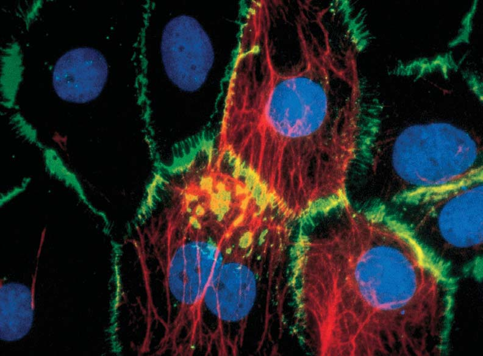
Membranas biológicas 107
zación entre las células. Una ausencia de estas proteínas de membrana se asocia con la invasividad de algunos tumores malignos. En el capítulo 4, se analizaron diversos orgánulos celulares y la manera en que interactúan para realizar las actividades de la célula. En este capítulo, se tratan la estructura y funciones de la membrana plasmática que rodea a la célula así como de aquellas membranas que rodean a muchos orgánulos. Se considera en primer lugar lo que se sabe acerca de la composición y estructura de las membranas biológicas. Después, se presenta una visión general de las muchas funciones vitales de las membranas celulares, como el transporte de materiales y la transferencia de la información. Se analiza cómo las células transportan diversos materiales, desde iones hasta moléculas complejas e incluso bacterias, a través de las membranas. Por último, se examinan las estructuras especializadas que permiten la interacción entre las membranas de diferentes células. Aunque gran parte de este análisis se centra en la estructura y función de la membrana plasmática, muchos de los conceptos se aplican a otras membranas celulares.
5.1 LA ESTRUCTURA DE LAS MEMBRANAS BIOLÓGICAS
OBJETIVOS DE APRENDIZAJE
1 Evaluar la importancia de las membranas para la homeostasis de la célula, enfatizando sus diversas funciones. 2 Describir el modelo de mosaico fl uido sobre la estructura de la membrana celular. 3 Relacionar las propiedades de la bicapa de lípidos con las propiedades y funciones de las membranas celulares internas. 4 Describir las formas en que las proteínas de membrana se asocian con la bicapa de lípidos.
Para realizar las muchas reacciones químicas necesarias para sostener la vida, la célula debe mantener un medio ambiente interno adecuado. Cada célula está rodeada por una membrana plasmática que físicamente la separa del mundo exterior y la defi ne como una entidad distinta. Mediante la regulación del paso de materiales dentro y fuera de la célula, la membrana plasmática ayuda a mantener un entorno interno que sustenta la vida. Como se analizó en el capítulo 4, las células eucariotas se caracterizan por numerosos orgánulos que están rodeados por membranas. Algunos de estos orgánulos como la envoltura nuclear, el retículo endoplásmico (RE), el complejo de Golgi, los lisosomas, las vesículas y las vacuolas, forman el sistema de endomembranas, que se extiende por toda la célula. Las membranas biológicas son complejas, su dinámica estructura está hecha de moléculas de lípidos y proteínas que se encuentran en constante movimiento. Las membranas tienen propiedades que les permiten realizar muchas funciones vitales. Regulan el paso de materiales, dividen la célula en compartimentos, sirven como superfi cies para reacciones químicas, se adhieren y comunican con otras células, y transmiten señales entre el medio ambiente y el interior de la célula. Las membranas también son una parte esencial del sistema de transferencia y almacenamiento de energía. ¿Cómo es que estas propiedades de las membranas celulares permiten a la célula realizar funciones tan variadas? Mucho antes del desarrollo del microscopio electrónico, los científi cos sabían que las membranas consisten en lípidos y proteínas. El trabajo realizado por los investigadores en las décadas de 1920 y 1930
proporcionaron pruebas de que en esencia las membranas celulares se componen de lípidos, en su mayoría fosfolípidos (vea el capítulo 3).
Los fosfolípidos forman bicapas en el agua
Los fosfolípidos son los principales responsables de las propiedades físicas de las membranas biológicas, ya que algunos de ellos tienen atributos únicos, como el de formar estructuras en bicapas. Un fosfolípido contiene dos cadenas de ácidos grasos unidos a dos de los tres átomos de carbono de una molécula de glicerol (vea la fi gura 3-13). Las cadenas de ácidos grasos constituyen la parte no polar, hidrófobica (“con temor o cierto rechazo al agua”) del fosfolípido. El tercer carbono del glicerol está unido al grupo fosfato, cargado negativamente, por tanto hidrofílico (“amoroso o más amigo del agua”), que a su vez está relacionado con un grupo orgánico polar, por tanto también hidrofílico. Las moléculas de este tipo, que presentan distintas regiones hidrofílicas e hidrófobas, se conocen como moléculas anfi páticas . Todos los lípidos que constituyen la esencia de las membranas biológicas tienen características anfi páticas. Debido a que un extremo de cada fosfolípido se asocia libremente con agua y el extremo opuesto no lo hace, su orientación más estable dentro del agua resulta en la formación de una estructura de bicapa ( FIGURA 5-1a ). Este arreglo permite que las cabezas hidrófi las de los fosfolípidos estén en contacto con el medio acuoso, mientras que sus colas aceitosas, debido a las cadenas hidrófobas de ácidos grasos, se encuentran confi nadas o inmersas hacia el interior de la estructura lejos de las moléculas de agua. Las propiedades anfi páticas por sí solas no predicen la capacidad de los lípidos para asociarse como una bicapa. La forma también es importante. Los fosfolípidos tienden a presentar un ancho de la molécula uniforme y una forma más o menos cilíndrica, las que junto con sus propiedades anfi páticas, son responsables de la formación de las dos capas. En resumen, los fosfolípidos forman bicapas porque las moléculas presentan (l) dos regiones distintas, una fuertemente hidrófoba y la otra fuertemente hidrófi la (haciéndolas fuertemente anfi páticas) y (2) por su forma cilíndrica que les permite asociarse con el agua más fácilmente como una bicapa.
- Fosfolípidos en agua. Los fosfolípidos se asocian en el agua como bicapas, ya que son moléculas anfipáticas más o menos cilíndricas. Las cadenas hidrófobas de ácidos grasos no están expuestas al agua, mientras que las cabezas hidrofílicas de fosfolípidos están en contacto con el agua.
Cabezas hidrófilas
Colas hidrófobas
- Detergente en agua. Las moléculas de detergente son moléculas anfipáticas de forma ligeramente cónica que se asocian en el agua formando estructuras esféricas.
FIGURA 5-1 Animada Propiedades de los lípidos en agua
108 Capítulo 5
de tres capas, parecida a una vía de ferrocarril, con dos capas oscuras separadas por una capa más clara ( FIGURA 5-3 ). Sus resultados parecían apoyar el modelo de sándwich de proteína-lípido-proteína. Durante la década de 1960 surgió una paradoja con respecto al arreglo de las proteínas. Los biólogos supusieron que las proteínas de membrana eran uniformes y tenían formas que les permitían arreglarse como láminas delgadas en la superfi cie de membrana. Pero cuando las purifi caron fraccionando la célula, las proteínas distaban de ser uniformes, de hecho, variaban ampliamente en tamaño y composición. Algunas proteínas son bastante grandes. ¿Cómo podían acomodarse dentro de una capa superfi cial de una membrana de menos de 10 nm de espesor?
¿Sabe por qué los detergentes quitan la grasa de las manos o de los platos sucios? Muchos detergentes comunes son moléculas anfi páticas, donde cada una contiene una sola cadena de hidrocarburo (como un ácido graso) en un extremo y una región hidrofílica en el otro extremo. Estas moléculas tienen forma ligeramente cónica, con el extremo hidrofílico formando la base ancha y la cola de hidrocarburo, el vértice. Debido a la forma, estas moléculas no se asocian como bicapas sino que tienden a formar estructuras esféricas en el agua ( FIGURA 5-1b ). Los detergentes pueden “solubilizar” las grasas debido a que estas moléculas se asocian con el interior hidrófobo de las esferas.
El modelo de mosaico fl uido explica la estructura de membrana
Al examinar la membrana plasmática de los eritrocitos de los mamíferos y comparar su superfi cie con el número total de moléculas de lípidos por célula, los primeros investigadores calcularon que la membrana no tiene más de dos moléculas de fosfolípidos de espesor. En 1935, estos hallazgos, junto con otros datos, condujeron a Hugh Davson y James Danielli, que trabajaban en el Colegio Universitario de Londres, a proponer un modelo en el que imaginaron una membrana como una especie de “sándwich” que consiste en una bicapa de lípidos (una doble capa de lípidos) entre dos capas de proteína ( FIGURA 5-2a ). Este útil modelo tuvo una gran infl uencia en la dirección de la investigación de las membranas durante más de 20 años. Los modelos son importantes en el proceso científi co, no sólo son buenos para explicar los datos disponibles, sino para comprobarse. Los científi cos utilizan modelos para ayudar a desarrollar hipótesis que se pueden probar experimentalmente (vea el capítulo l). Con el desarrollo del microscopio electrónico en la década de 1950, los biólogos celulares pudieron ver la membrana plasmática por primera vez. Una de sus observaciones más impactante fue ver cómo las membranas son uniformes y delgadas. La membrana plasmática no tiene más de 10 nm de espesor. El microscopio electrónico reveló una estructura
El modelo de Davson-Danielli fue el punto de vista que se aceptó hasta alrededor de 1970, cuando los avances en la biología y la química condujeron a nuevos descubrimientos acerca de las membranas biológicas que fueron incompatibles con este modelo. El modelo de mosaico fl uido está soportado por una gran cantidad de datos.
El modelo de Davson-Danielli. De acuerdo con este modelo, la membrana es un sándwich de fosfolípidos repartidos entre dos capas de proteína. Aunque fue aceptado por muchos años, se demostró que este modelo era incorrecto.
Modelo de mosaico fluido. Según este modelo, una membrana celular es una bicapa de lípidos fluida y proteínas asociadas, que cambian constantemente el“patrón de mosaico”.
Proteínas de membrana
Proteínas de membrana
Bicapa de fosfolípidos Bicapa de fosfolípidos
Proteína periférica
Región hidrófila de la proteína Región hidrófoba de la proteína
Proteína integral (transmembrana)
FIGURA 5-2 Dos modelos de la estructura de membrana
PUNTO CLAVE
Membrana plasmática
Exterior de la célula
Interior de la célula
0.1 μ m
Omikron/Photo Researchers, Inc.
FIGURA 5-3 MET de la membrana plasmática de un eritrocito de mamíferos La membrana plasmática separa el citosol ( región más oscura ) del ambiente externo ( región más clara ). Las cabezas hidrófi las de los fosfolípidos son las líneas oscuras paralelas, y las colas hidrófobas son la zona clara entre ellos.
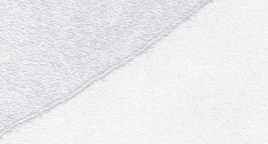
Membranas biológicas 109
cualidades de los fl uidos de bicapas de lípidos también permiten que las moléculas incrustadas en éstos se muevan a lo largo del plano de la membrana (siempre y cuando no están anclados de alguna manera). David Frye y Michael Edidin demostraron elegantemente esto en 1970. Realizaron experimentos en los que siguieron el movimiento de las proteínas de membrana en la superfi cie de dos células que se habían unido ( FIGURA 5-5 ). Cuando se fusionan las membranas plasmáticas de una cé-
Al principio, algunos investigadores trataron de contestar esta pregunta modifi cando el modelo con la hipótesis de que las proteínas en la superfi cie de las membranas estaban aplanadas, en forma extendida, quizá como en la lámina plegadab (vea la fi gura 3-20b). Otros biólogos celulares encontraron que en lugar de tener estructura laminar, muchas proteínas de membrana son redondas, o globulares. Los estudios de muchas proteínas de membrana demostraron que una región (o dominio) de la molécula siempre se puede encontrar en un lado de la bicapa, mientras que otra parte de la proteína podría estar situada en el lado opuesto. En lugar de formar una delgada capa superfi cial, muchas proteínas de membrana se extendían completamente a través de la bicapa de lípidos. Así, la evidencia sugería que las membranas contienen diferentes tipos de proteínas de distintas formas y tamaños que están asociados con la bicapa en un patrón de mosaico. En 1972, S. Jonathan Singer y Garth Nicolson de la Universidad de California en San Diego propusieron un modelo de la estructura de membrana que representa una síntesis de las propiedades conocidas de las membranas biológicas. De acuerdo con su modelo de mosaico fl uido , una membrana celular consiste en una bicapa fl uida de moléculas de fosfolípidos en la que las proteínas están incrustadas o asociadas de alguna forma, al igual que las fracciones de azulejos en una imagen de mosaico. Sin embargo, este patrón de mosaico no es estático, porque las posiciones de muchas de las proteínas están cambiando constantemente al moverse como icebergs en un mar fl uido de fosfolípidos. Este modelo ha proporcionado un gran impulso a la investigación, se ha probado en varias ocasiones y se ha demostrado para predecir con precisión las propiedades de muchos tipos de membranas celulares. La FIGURA 5-2b muestra la membrana plasmática de una célula eucariota de acuerdo con el modelo de mosaico fl uido; la membrana plasmática de procarióticas se analizan en el capítulo 25.
Las membranas biológicas son fl uidos bidimensionales
Una propiedad física importante de las bicapas de fosfolípidos es que se comportan como cristales líquidos . Las bicapas son como un cristal, donde las moléculas de lípidos forman un arreglo ordenado, con las cabezas hacia el exterior y las cadenas de ácidos grasos hacia su interior; y son como líquidos en los que, a pesar del arreglo ordenado de las moléculas, sus cadenas de hidrocarburos se encuentran en constante movimiento. Así, las moléculas están libres para girar y se pueden mover lateralmente dentro de su misma capa ( FIGURA 5-4 ). Este movimiento le da a la bicapa la característica de un fl uido de dos dimensiones . Bajo condiciones normales una simple molécula de fosfolípido puede viajar lateralmente a través de la superfi cie de una célula eucariótica en segundos. Las
Tiempo
Sólo movimiento lateral
FIGURA 5-4 Fluidez de la membrana El arreglo ordenado de las moléculas de fosfolípidos hace de la membrana celular un cristal líquido. Las cadenas hidrocarbonadas están en constante movimiento, permitiendo que cada molécula de fosfolípido se mueva lateralmente en el mismo lado de la bicapa.
EXPERIMENTO CLAVE
PREGUNTA: ¿ Las proteínas incrustadas en una membrana biológica se mueven?
HIPÓTESIS: Las proteínas se pueden mover lateralmente en la membrana plasmática.
EXPERIMENTO: Larry Frye y Michael Edidin etiquetaron las proteínas de membrana de las células de ratón y de humanos utilizando diferentes tintes o colorantes fl uorescentes para distinguirlas. Después fusionaron las células de ratón y de humanos para producir células híbridas.
Célula humana
Células humanas y de ratón formando híbridos. Cuando las membranas plasmáticas de células de ratón y de células humanas se fusionaron, las proteínas de ratón migraron al lado humano y las proteínas humanas para el lado del ratón
Proteínas distribuidas aleatoriamente. Después de un corto tiempo, las proteínas de ratón y humano se distribuyeron aleatoriamente a través de la membrana.
Proteínas de membrana etiquetadas. Las proteínas de membrana de las células de ratón y de las células de humanos se marcaron con tintes fluorescentes de dos colores diferentes.
Célula de ratón
1 2 3
RESULTADOS Y CONCLUSIÓN: Después de un breve período de incubación, las células de ratón y humano se entremezclaron sobre la superfi cie de las células híbridas. Después de 40 minutos aproximadamente, las proteínas de cada especie se han distribuido de manera aleatoria a través de toda la membrana plasmática híbrida. Este experimento demostró que las proteínas de la membrana plasmática se mueven.
FIGURA 5-5 Animada Experimento de Frye y Edidin
Fuente: Frye, L. D. y M. Edidin. “The rapid intermixing of cell surface antigens after formation of mouse-human heterokaryons”. Journal of Cell Science , vol. 7, 319-335, 1970.
110 Capítulo 5
Ciertas propiedades de los lípidos de membrana tienen efectos signifi cativos en la fl uidez de la bicapa. Recuerde del capítulo 3 que las moléculas están libres para girar alrededor de un solo enlace covalente carbono-carbono. Ya que la mayoría de los enlaces en las cadenas de hidrocarburos son enlaces simples, las cadenas giran cada vez más rápidamente al aumentar la temperatura. El estado fl uido de la membrana depende de sus componentes lípidos. Quizás ha notado que cuando la mantequilla derretida se deja a temperatura ambiente se solidifi ca. Los aceites vegetales, sin embargo, permanecen en estado líquido a temperatura ambiente. Recuerde que en el análisis de los lípidos en el capítulo 3 se mostró que las grasas animales como la mantequilla presentan un alto contenido de ácidos grasos saturados que carecen de dobles enlaces. En contraste, un aceite vegetal puede ser polinsaturado, donde la mayoría de sus cadenas de ácidos grasos presentan dos o más dobles enlaces. En cada doble enlace se produce una fl exión de la molécula que evita que las cadenas de hidrocarburos se
lula de ratón y una célula humana, en pocos minutos algunas de las proteínas de membrana de cada célula migran y se distribuyen aleatoriamente sobre la única y continua membrana plasmática que rodea a las células unidas. Frye y Edidin mostraron que la fl uidez de los lípidos en la membrana le permite a muchas de las proteínas moverse, produciendo una confi guración cambiante. Ocasionalmente, con la ayuda de enzimas en la membrana celular, las moléculas de fosfolípidos se mueven de una capa a otra. Para que una membrana funcione correctamente, sus lípidos deben presentar un estado de fl uidez óptimo. La estructura de membrana se debilita si los lípidos son demasiado fl uidos. Sin embargo, muchas funciones de la membrana, como el transporte de ciertas sustancias, se inhiben o cesan si la bicapa de lípidos es demasiado rígida. A temperaturas normales, las membranas celulares son fl uidas, pero a bajas temperaturas el movimiento de las cadenas de ácidos grasos es más lento. Si la temperatura disminuye hasta un punto crítico, la membrana se convierte en un gel más sólido.
De acuerdo con el modelo de mosaico fl uido, una membrana celular se compone de una bicapa fl uida de fosfolípidos en la que las proteínas se mueven como icebergs en un mar.
Proteínas integrales Proteína periférica
Hélice α
Citosol
Hidrófilo
Hidrófilo
Fluido extracelular Cadena de carbohidratos
Cadenas de carbohidratos
Glicoproteína
Hidrófobo
Glicolípidos
Colas hidrófobas
Colesterol
FIGURA 5-6 Estructura detallada de la membrana plasmática
Aunque la bicapa de lípidos se compone principalmente de fosfolípidos, incluye otros lípidos, como el colesterol y los glicolípidos. Las proteínas periféricas están estrechamente asociadas con la superfi cie de la bicapa, mientras que las proteínas integrales están fuertemente adheridas a ella. Las proteínas integrales que aparecen aquí son proteínas transmembrana que se extienden a través de la bicapa. Ellas presentan
regiones hidrofílicas en ambos lados de la bicapa, conectadas por una hélice a que atraviesa la membrana. Los glicolípidos (carbohidratos unidos a lípidos) y las glicoproteínas (carbohidratos unidos a proteínas) están expuestos en la superfi cie extracelular, juegan un papel en el reconocimiento celular y en la adhesión a otras células.
PUNTO CLAVE
Membranas biológicas 111
fl exibles, permitiendo a las membranas celulares cambiar de forma sin romperse. Bajo condiciones apropiadas las bicapas de lípidos se fusionan con otras bicapas. La fusión de membranas es un importante proceso celular. Cuando una vesícula se fusiona con otra membrana, ambas bicapas de membrana y sus compartimentos se hacen continuos. Varias vesículas de transporte se forman a partir de, y también se fusionan con, las membranas del RE y el complejo de Golgi, facilitando la transferencia de materiales de un compartimento a otro. Una vesícula se fusiona con la membrana plasmática cuando la célula secreta un producto.
Las proteínas de membrana incluyen proteínas integrales y periféricas
Las dos clases principales de proteínas de membrana, las proteínas integrales y las proteínas periféricas, se defi nen por la fuerza con que se asocian con la bicapa de lípidos ( FIGURA 5-7 ). Las proteínas integrales de la membrana están unidas con fi rmeza a la membrana. Los biólogos celulares normalmente sólo pueden liberarlas rompiendo la bicapa con detergentes. Estas proteínas son anfi páticas. Sus regiones hidrofílicas se extienden fuera de la célula o en el citoplasma, mientras que sus regiones hidrófobas interactúan con las colas de ácido graso de los fosfolípidos de membrana. Algunas proteínas integrales no atraviesan toda la membrana. Muchas otras, llamadas proteínas transmembrana , atraviesan totalmente la membrana. Algunas atraviesan la membrana una sola vez, mientras que otras la atraviesan de ida y vuelta hasta 24 veces. El tipo más común de proteína transmembrana es un hélice a (vea el capítulo 3) con cadenas laterales de aminoácidos hidrófobos proyectándose hacia fuera de la hélice dentro de la región hidrófoba de la bicapa de lípidos. Algunas proteínas atraviesan la membrana en forma de láminas plegadas β enrolladas hacia arriba. Estas formaciones de proteínas tienen apariencia de barril y forman poros a través de los cuales pueden pasar el agua y otras sustancias. Las proteínas periféricas de la membrana no se incrustan en la bicapa de lípidos. Se encuentran en la superfi cie interior o exterior de la membrana plasmática, normalmente unidas a regiones expuestas de proteínas integrales mediante interacciones no covalentes. Las proteínas
acerquen e interactúen a través de las fuerzas de van der Waals. De esta manera, las grasas insaturadas disminuyen la temperatura a la que los lípidos de membrana o del aceite se solidifi can. Muchos organismos presentan mecanismos reguladores para mantener la fl uidez de las membranas celulares en un estado óptimo. Algunos organismos compensan los cambios de temperatura alterando el contenido de ácidos grasos de los lípidos de membrana. Cuando la temperatura exterior es fría, los lípidos de membrana contienen proporciones relativamente altas de ácidos grasos insaturados. Algunos lípidos de membrana estabilizan la fl uidez de la membrana dentro de ciertos límites. Uno de estos “amortiguadores de fl uidez” es el colesterol, esteroide que se encuentra en las membranas celulares de los animales. Una molécula de colesterol es en gran parte hidrófoba, pero es ligeramente anfi pática debido a la presencia de un solo grupo hidroxilo (vea la fi gura 3-15a). Este grupo hidroxilo está asociado con las cabezas hidrofílicas de los fosfolípidos, el restante hidrófobo de la molécula de colesterol se ajusta entre las cadenas de hidrocarburos de los ácidos grasos ( FIGURA 5-6 ). A bajas temperaturas las moléculas de colesterol actúan como “separadores” entre las cadenas de hidrocarburos, restringiendo la interacción de las fuerzas de van der Waals que promoverían la solidifi cación. El colesterol también ayuda a evitar que la membrana se vuelva débil o inestable a temperaturas más altas. La razón es que las moléculas de colesterol interactúan fuertemente con las partes de las cadenas de hidrocarburos más próximos a la cabeza del fosfolípido. Esta interacción restringe el movimiento en estas regiones. Las células vegetales tienen otros esteroides como el colesterol que realizan funciones similares.
Las membranas biológicas se fusionan y forman vesículas cerradas
Las bicapas de lípidos, especialmente aquellas en estado líquido-cristalino, presentan otras propiedades físicas importantes. Estas bicapas tienden a resistir la formación de extremos libres, como resultado se autosellan y en la mayoría de las condiciones, en forma espontánea se redondean para formar vesículas cerradas. Las bicapas de lípidos también son
Bicapa de lípidos
Exterior de la célula
Citosol
Una única hélice α (b) Una proteína que consta de varias hélices α (c) Plegamiento de tipo lámina β enrollada hacia arriba
Proteína periférica externa unida a una proteína integral
Proteína periférica interna unida a una proteína integral
FIGURA 5-7 Animada Proteínas transmembrana Se muestran tres proteínas transmembrana en (a) , (b) y (c) . La lámina plegada b enrollada hacia arriba se muestra en (c) formando un poro a través de la membrana. Las moléculas de agua y los iones pasan a través de tipos específi cos de poros (d, e) . Las proteínas periféricas se unen a las proteínas integrales mediante interacciones no covalentes.
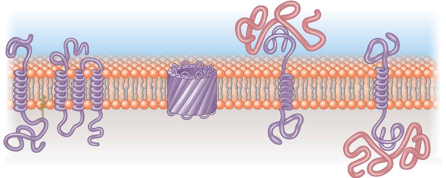
112 Capítulo 5
MÉTODO DE INVESTIGACIÓN
El método de criofractura se utiliza para abrir la bicapa de lípidos, a fi n de que se puedan analizar sus componentes.
0.1 μ m
Cara-E
Cara-P
Cara-E
Cara-P
Fluido extracelular
Filo de un cuchillo Hielo
Célula
Citosol
3 4
1
Resultan dos fracturas complementarias una frente a la otra. La media membrana interior presenta la cara-P (o la cara protoplasmática), y la media membrana exterior presenta la cara-E (o la cara externa). Las proteínas integrales, como las proteínas transmembrana, se insertan a través de la bicapa de lípidos.
Las células se congelan en nitrógeno líquido y después se fracturan con el filo de un cuchillo.
2 La fractura con frecuencia divide a la membrana a lo largo del interior hidrófobo de la bicapa de lípidos.
Se utilizó un microscopio electrónico para visualizar las superficies interiores (las caras) de las dos capas. En este MET las partículas (que aparecen como protuberancias) representan grandes proteínas integrales.
Bloom and Fawcett Textbook of Histology
FIGURA 5-8 Método de criofractura
¿Por qué se utiliza?
¿Cómo se hace esto?


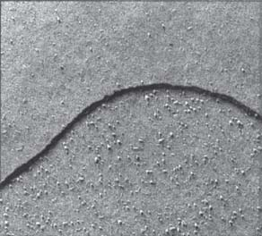


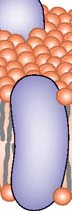
Membranas biológicas 113
que serán parte de la superfi cie interna de la membrana plasmática son fabricados por ribosomas libres y se mueven hacia la membrana a través del citoplasma. Las proteínas de membrana que se asociarán con la superfi cie externa de la célula se fabrican como las proteínas destinadas a ser exportadas de la célula. Como se analizó en el capítulo 4, las proteínas destinadas a la superfi cie externa de la célula son inicialmente fabricadas por los ribosomas en el RE rugoso. Luego pasan a través de la membrana del RE por el lumen o luz del RE, donde se agregan los azúcares, haciéndolas glicoproteínas . Sin embargo, sólo una parte de cada proteína pasa a través de la membrana del RE, por lo que cada proteína completa tiene unas regiones que están situadas en el lumen del RE y otras regiones que permanecen en el citosol. Las enzimas que unen los azúcares a ciertos aminoácidos de la proteína sólo se encuentran en el lumen del RE. De este modo, los carbohidratos sólo se pueden agregar a las partes de las proteínas localizadas en dicho compartimento. En la FIGURA 5-9 , siga de arriba abajo los eventos de brote de vesícula y su fusión a la membrana, que hacen parte del proceso de transporte. Se puede ver que la región de la proteína que sobresale en el lumen del RE se mantiene durante su transporte hasta la luz del complejo de Golgi.
periféricas se pueden quitar fácilmente de la membrana sin alterar la estructura de la bicapa.
Las proteínas están orientadas asimétricamente a través de la bicapa
Una de las manifestaciones más notables de que las proteínas se encuentran incrustadas en la bicapa del lípido proviene de la microscopia electrónica de criofr actura , una técnica que divide a la membrana en dos mitades. El investigador puede, literalmente, ver las dos mitades de la membrana de “adentro hacia afuera”. Cuando los biólogos celulares examinan las membranas de esta manera, observan numerosas partículas en las caras de la fractura ( FIGURA 5-8 ). Las partículas son claramente las proteínas integrales de membrana, ya que los investigadores nunca las han visto en las bicapas de lípidos artifi ciales con el método de criofractura. Estos descubrimientos infl uyeron profundamente en Singer y Nicolson cuando desarrollaron el modelo de mosaico fl uido. Las moléculas de las proteínas de membrana están orientadas asimétricamente . La asimetría es producida por la forma muy específi ca en que se inserta cada proteína en la bicapa. Las proteínas de membrana
La orientación de una proteína en la membrana plasmática está determinada por la ruta de su síntesis y transporte.
Membrana plasmática
Vesícula de transporte
Vesícula de transporte
Cadena de carbohidratos
Complejo de Golgi
RE rugoso Núcleo
Membrana del complejo de Golgi
Membrana plasmática de la célula
Los azúcares se agregan a la proteína en la luz o lumen del RE rugoso.
La glicoproteína es transportada al complejo de Golgi donde se modifica más.
La vesícula de transporte traslada la glucoproteína hasta la membrana plasmática. La vesícula de transporte se fusiona con la membrana plasmática. La cadena de carbohidratos se proyecta hacia afuera.
1
2
4
3
FIGURA 5-9 Síntesis y orientación de una proteína de membrana La cara de la superfi cie de la membrana que da la luz o el lumen del RE rugoso es la misma cara del lumen del complejo de Golgi y las vesículas. Sin embargo, cuando una vesícula se fusiona con la membrana plasmática, la superfi cie interna de la vesícula se integra a la superfi cie extracelular de la membrana plasmática.
PUNTO CLAVE
114 Capítulo 5
Existen otras enzimas que modifi can aún más las cadenas de carbohidratos. Dentro del complejo de Golgi, la glicoproteína es marcada y dirigida a la membrana plasmática. La región modifi cada de la proteína permanece en el interior del compartimento membranoso de una vesícula de transporte conforme brota del complejo de Golgi. Observe que cuando la vesícula de transporte se fusiona con la membrana plasmática, la capa interna de la vesícula de transporte se convierte en la capa externa de la membrana plasmática. La cadena de carbohidratos se extiende al exterior de la superfi cie celular. En resumen, ésta es la secuencia:
El azúcar es agregado a la proteína en el lumen del RE ¡
la glicoproteína es transportada al complejo de Golgi, donde
se modifi ca aún más ¡ la glicoproteína es trasladada a
la membrana plasmática ¡ la vesícula de transporte se
fusiona con la membrana plasmática (la capa interna de la
vesícula de transporte se convierte en la capa externa de la
membrana plasmática)
Repaso
■ ¿Qué moléculas son responsables de las propiedades físicas de la membrana celular?
■ Cómo se ubica una proteína transmembrana en la bicapa de lípidos? ¿Qué efecto tienen las regiones hidrófi las e hidrófobas de una proteína sobre su orientación?
■ ¿Qué ruta siguen las células para agregar carbohidratos a las proteínas de la membrana plasmática?
5.2 DESCRIPCIÓN DE LAS FUNCIONES DE LAS PROTEÍNAS DE MEMBRANA
■ ■ OBJETIVO DE APRENDIZAJE
5 Resumir las funciones de las proteínas de membrana.
¿Por qué la membrana plasmática requiere proteínas tan diferentes? Esta diversidad refl eja la multitud de actividades que tienen lugar en o sobre la membrana. Las proteínas asociadas a la membrana son esenciales para la mayor parte de estas actividades. En general, las proteínas de membrana plasmática se dividen en varias categorías funcionales, como se muestra en la FIGURA 5-10 . Algunas proteínas de membrana fi jan la célula a su sustrato. Por ejemplo, las integrinas , son proteínas unidas a los microfi lamentos dentro de la célula, que conectan a ésta con la matriz extracelular (fi gura 5-10a). Las integrinas también sirven como receptores, o sitios de acoplamiento, para las proteínas de la matriz extracelular (vea la fi gura 4-30). Muchas proteínas de membrana están implicadas en el transporte de moléculas a través de la membrana. Algunas forman canales que permiten el paso selectivo de iones o moléculas específi cas (fi gura 5-10b). Otras proteínas forman las bombas que utilizan el ATP u otras fuentes de energía, para trasladar activamente los solutos a través de la membrana (fi gura 5-10c). Ciertas proteínas de membrana son enzimas que catalizan reacciones cerca de la superfi cie celular (fi gura 5-10d). En las membranas mitocondriales o del cloroplasto, las enzimas están
Las proteínas celulares realizan muchas funciones, incluido el transporte de materiales, como enzimas para reacciones químicas, y en la transmisión de información.
Anclaje. Algunas proteínas de membrana, como las integrinas, anclan la célula a la matriz extracelular, y también se unen a los microfilamentos dentro de la célula.
Transporte pasivo. Ciertas proteínas forman canales para el paso selectivo de iones o moléculas.
Transporte activo. Algunas proteínas de transporte bombean solutos a través de la membrana, requiriendo un ingreso directo de energía.
Actividad enzimática. Muchas enzimas unidas a la membrana catalizan las reacciones que ocurren dentro o en la superficie de la membrana.
Transducción de señales. Algunos receptores se unen con las moléculas de señales como las hormonas y transmiten la información al interior de la célula.
Reconocimiento de células. Algunas glicoproteínas funcionan como etiquetas de identificación. Por ejemplo, las células bacterianas tienen proteínas superficiales, o antígenos, que las células humanas reconocen como extrañas.
Unión intercelular. Las proteínas de adhesión celular unen las membranas de las células adyacentes.
Dentro de célula 1 Dentro de célula 2
Fuera de la célula Dentro de la célula bacteriana
Antígeno Anticuerpo
Fuera de la célula Dentro de la célula
Fuera de la célula Dentro de la célula
Fuera de la célula Dentro de la célula
ATP
ADP
K +
P
Na +
Fuera de la célula Dentro de la célula
Dentro de la célula
Integrina
Fuera de la célula
FIGURA 5-10 Algunas funciones de las proteínas de membrana
PUNTO CLAVE
Membranas biológicas 115
pacios que se forman entre las cadenas de ácidos grasos de la bicapa en su movimiento continuo. Como resultado, las moléculas de agua cruzan lentamente la bicapa de lípidos. La bicapa de lípidos de la membrana plasmática es relativamente impermeable a los iones cargados, independientemente de su tamaño, por lo que los iones y moléculas polares más grandes pasan a través de la bicapa lentamente. Los iones son importantes en la señalización celular y en muchos otros procesos fi siológicos. Por ejemplo, muchos procesos celulares, como la contracción muscular, dependerán de los cambios en la concentración citoplásmica de los iones de calcio. La glucosa, los aminoácidos, y otros compuestos necesarios en el metabolismo son moléculas polares que también pasan a través de la bicapa de lípidos lentamente. Esto es ventajoso para las células porque la impermeabilidad de la membrana plasmática les evita que se difundan al exterior. ¿Entonces cómo obtienen las células los iones y las moléculas polares que necesitan?
Las proteínas de transporte pasan las moléculas de un lado a otro de las membranas
Los sistemas de proteínas de transporte que mueven a través de las membranas iones, aminoácidos, azúcares y otras moléculas polares necesarias, evolucionaron aparentemente muy pronto al origen de las cé lulas. Estas proteínas transmembrana se han encontrado en todas las membranas biológicas. Los dos tipos principales de proteínas de transporte de membrana son las proteínas transportadoras y las proteínas de canal. Cada tipo de proteína de transporte traslada un tipo específi co de ion o molécula o un grupo de sustancias relacionadas. Las proteínas de transporte , también llamadas transportadoras , se unen al ion o a la molécula, experimentando cambios en su forma, que provocan el movimiento de la molécula a través de la membrana. La transferencia de solutos mediante las proteínas transportadoras ubicadas dentro de la membrana se llama transporte mediado por el transportador . Como se analizará, las dos formas de transporte mediado por el transportador (difusión facilitada y transporte activo mediado por el transportador), difi eren en sus capacidades y fuentes de energía. Los transportadores ABC forman un gran e importante grupo de proteínas transportadoras. El acrónimo ABC corresponde a las siglas en inglés de ATP-binding cassett e (casete de unión a ATP). Se encuentra en las membranas celulares de todas las especies, los transportadores ABC usan la energía donada por la ATP para el traslado de ciertos iones, azúcares y polipéptidos a través de las membranas celulares. Los científi cos han identifi cado aproximadamente 48 tipos de transportadores ABC en las células humanas. Las mutaciones en los genes que codifi can estas proteínas causan o contribuyen a muchas enfermedades humanas, incluyendo la fi brosis quística y otras enfermedades neurológicas. Los transportadores ABC trasladan fármacos hidrófobos fuera de la célula. Clínicamente, esta respuesta puede ser un problema porque ciertos transportadores eliminan antibióticos, antimicóticos y medicamentos anticancerígenos. Las proteínas de canal forman túneles, llamados poros, a través de la membrana. Muchos de estos canales están bloqueados , lo que signifi ca que se pueden abrir y cerrar. Las células regulan el paso de materiales a través de los canales mediante la apertura y el cierre de las puertas que los bloquean en respuesta a cambios eléctricos, estímulos químicos, o estímulos mecánicos. El agua y tipos específi cos de iones son transportados a través de canales. Hay numerosos canales de iones en todas las membranas de cada célula. Las porinas son proteínas transmembrana de canal que permiten que diversos solutos o agua pasen a través de las membranas. Estas proteínas de canal son cilindros huecos, con estructura de barril debido al enrollamiento hacia arriba de láminas b , que forman poros. Los investi-
organizadas en secuencias que le permiten al orgánulo regular efi cazmente la serie de reacciones que ocurren en la respiración celular o en la fotosíntesis. Algunas proteínas de membrana son receptores que reciben información de otras células en forma de señales químicas o eléctricas. La mayoría de las células de los vertebrados tienen receptores para las hormonas liberadas por las glándulas endocrinas. La información puede ser transmitida desde las proteínas de la membrana plasmática al interior de la célula mediante la transducción de señales (se analiza en el capítulo 6; fi gura 5-10e). Algunas proteínas de membrana sirven como etiquetas de identifi cación que otras células reconocen. Por ejemplo, ciertas células humanas reconocen como extrañas las proteínas de la superfi cie o antígenos , de las células bacterianas. Los antígenos estimulan las defensas inmunitarias que destruyen las bacterias (fi gura 5-10f). Cuando ciertas células se reconocen mutuamente, se conectan para formar tejidos. Algunas proteínas de membrana forman uniones entre células adyacentes (fi gura 5-10g). Estas proteínas también pueden servir como puntos de anclaje para la compleja red de elementos del citoesqueleto. En las secciones que restan de este capítulo, se analizarán las funciones de las proteínas de membrana celular en el transporte de materiales dentro y fuera de la célula, y se estudiarán las uniones entre las células. Se analizarán otras funciones de las membranas celulares en varios de los capítulos que siguen.
Repaso
■ ¿Cómo funcionan las proteínas en el transporte de materiales dentro de la célula?
■ ¿Qué función desempeñan las proteínas de membrana en el reconocimiento celular?
5.3 ESTRUCTURA Y PERMEABILIDAD DE LA MEMBRANA CELULAR
■ ■ OBJETIVO DE APRENDIZAJE
6 Describir la importancia de la permeabilidad selectiva de las membranas y comparar las funciones de las proteínas transportadoras y las proteínas de canal.
Una membrana es permeable a una sustancia dada si permite que la sustancia pase a través de ella y es impermeable si no lo hace. La estructura del mosaico fl uido de las membranas biológicas les permite funcionar como membranas de permeabilidad selectiva o semipermeables , dejando que algunas, pero no todas, las sustancias pasen a través de ellas. En respuesta a las diversas condiciones ambientales o las necesidades de la célula, una membrana puede ser una barrera para una sustancia par ticular en un momento y promover activamente su paso en otro momento. Mediante la regulación del tráfi co químico a través de su membrana plasmática, una célula controla su volumen y su composición interna iónica y molecular. Esta regulación permite que la composición molecular de la célula sea bastante diferente a la de su entorno externo.
Las membranas biológicas constituyen una barrera para las moléculas polares
En general, las membranas biológicas son más permeables a pequeñas moléculas no polares (hidrófobas). Tales moléculas pueden pasar a través de la bicapa de lípidos hidrófoba. Gases como el oxígeno y el dióxido de carbono son moléculas pequeñas, no polares que cruzan la bicapa de lípidos con rapidez. A pesar de que las moléculas de agua son polares, su tamaño es lo sufi cientemente pequeño para pasar a través de los es-
116 Capítulo 5
átomos y las moléculas tienen energía cinética, o energía de movimiento, a temperaturas arriba del cero absoluto (0 K, −273°C, o −459.4°F). La materia puede existir como un sólido, un líquido o un gas, dependiendo de la libertad de movimiento de sus partículas constituyentes (átomos, iones o moléculas). Las partículas de un sólido están muy juntas, y las fuerzas de atracción entre ellas les permiten vibrar, pero no moverse. En un líquido las partículas están más separadas, las atracciones intermoleculares son más débiles, y las partículas se mueven con gran libertad. En un gas las partículas están tan separadas que las fuerzas intermoleculares son despreciables; el movimiento molecular está restringido solamente por las paredes del recipiente que encierra el gas. Los átomos y las moléculas en líquidos y gases se mueven en una especie de “camino aleatorio”, cambiando de dirección conforme chocan. Aunque el movimiento de cada una de las partículas individuales no tiene dirección y es impredecible, no obstante se pueden hacer predicciones acerca del comportamiento de grupos de partículas. Si las partículas no están distribuidas uniformemente, entonces al menos existen dos regiones: una con una mayor concentración de partículas y el otro con una concentración más baja. Esta diferencia en la concentración de una sustancia de un lugar a otro establece un gradiente de concentración . En difusión, el movimiento aleatorio de las partículas da como resultado un movimiento neto “a favor” de su propio gradiente de concentración, desde la región de mayor concentración a una de menor concentración. Esto no signifi ca que las partículas individuales no podrán avanzar “en contra” del gradiente. Sin embargo, debido a que hay más partículas inicialmente en la región de alta concentración, se deduce lógicamente que más partículas se mueven de manera aleatoria a partir de ahí a la región de baja concentración que a la inversa ( FIGURA 5-11 ). Así, si una membrana es permeable a una sustancia, existe un movimiento neto desde el lado de la membrana donde está más concentrado al lado donde está menos concentrado. Este gradiente que atraviesa la membrana es una forma de energía almacenada. La energía almacenada es la energía potencial , que es la capacidad para realizar trabajo como resultado de la posición o del estado. La energía almacenada del gradiente de concentración se libera cuando los iones o moléculas se mueven desde una región de alta concentración a una de baja concentración. Por esta razón, el movimiento por un gradiente de concentración es espontáneo. (Las formas de energía y los procesos espontáneos se analizan con más detalle en el capítulo 7). La difusión se produce con rapidez en distancias muy cortas. La velocidad de difusión está determinada por el movimiento de las partícu las, que a su vez está en función de su tamaño y forma, sus cargas eléctricas, y la temperatura. Conforme se incrementa la temperatura, las partículas se mueven más rápido y aumenta la razón de difusión. Las partículas de diferentes sustancias en una mezcla se difunden independientemente una de otra. La difusión mueve solutos hacia un estado de equilibrio. Si las partículas no se agregan o se eliminan del sistema, se alcanza un estado de equilibrio dinámico . En esta condición, las partículas están distribuidas uniformemente y no hay cambio neto en el sistema. Las partículas continúan moviéndose hacia atrás y hacia adelante a tra-
gadores Peter Agre, de la Escuela de Medicina Johns Hopkins en Baltimore, Maryland, y Roderick MacKinnon, del Instituto Médico Howard Hughes de la Universidad de Rockefeller en Nueva York, compartieron el Premio Nobel 2003 de Química por su trabajo en las proteínas de transporte. Agre identifi có las proteínas transmembrana llamadas acuaporinas , que funcionan como canales de agua con compuertas. Las acuaporinas facilitan el traslado rápido de agua a través de la membrana plasmática. ¡Alrededor de mil millones de moléculas de agua por segundo pueden pasar a través de una acuaporina! Estos canales son muy selectivos y no permiten el paso de iones y otras moléculas pequeñas. En algunas células, como las que recubren los túbulos renales de los mamíferos, las acuaporinas responden a las señales específi cas de las hormonas. Así mismo, ayudan a prevenir la deshidratación regresando el agua de los túbulos renales a la sangre.
Repaso
■ ¿Qué tipos de moléculas pasan fácilmente a través de la membrana plasmática?
■ ¿Cuáles son los dos tipos principales de proteínas de transporte? ¿Cuáles son sus funciones?
■ ¿Qué son las acuaporinas? ¿Cuál es su función?
5.4 TRANSPORTE PASIVO
■ ■ OBJETIVOS DE APRENDIZAJE
7 Comparar la difusión simple con la difusión facilitada. 8 Defi nir ósmosis y resolver problemas sencillos relacionados con la ósmosis, por ejemplo, predecir si las células se hinchan o se encogen bajo diversas condiciones osmóticas.
El transporte pasivo no requiere que la célula gaste energía metabólica. Muchos iones y moléculas pequeñas se mueven a través de las membranas por difusión . Hay dos tipos de difusión, la difusión simple y la difusión facilitada.
La difusión se produce por un gradiente de concentración
Algunas sustancias ingresan o salen de las células y se mueven dentro de ellas por difusión , un proceso físico de movimiento aleatorio. Todos los
Cuando se deja caer un terrón de azúcar en el vaso de agua pura, las moléculas de azúcar empiezan a disolverse y se difunden a través del agua.
Las moléculas de azúcar continúan disolviéndose y se difunden en toda el agua.
Finalmente, las moléculas de azúcar quedan distribuidas aleatoriamente a lo largo de agua.
1 2 3
FIGURA 5-11 Difusión
Membranas biológicas 117
centración de soluto, para impedir la difusión del agua (por ósmosis) desde el lado con la concentración más baja de soluto. En el ejemplo del tubo en U, se puede medir la presión osmótica mediante la inserción de un pistón en el lado agua y soluto del tubo y midiendo qué presión debe ejercer el pistón para evitar el aumento de líquido en ese lado del tubo. Una disolución con una alta concentración del soluto tiene una baja concentración efectiva de agua y una presión osmótica alta, inversamente, una disolución con una concentración de soluto baja tiene una alta concentración efectiva de agua y una presión osmótica baja.
Dos disoluciones pueden ser isotónicas
Las sales, azúcares y otras sustancias se disuelven en el compartimento fl uido de cada célula (citosol). Estos solutos le dan al citosol una presión
vés de la membrana, pero se mueven con la misma rapidez en ambas direcciones. En los organismos, rara vez se alcanza el equilibrio. Por ejemplo, las células humanas producen continuamente dióxido de carbono, azúcares y otras moléculas que son metabolizadas durante la respiración aeróbica. El dióxido de carbono se difunde con facilidad a través de la membrana plasmática pero luego se elimina rápidamente por la sangre. Esto limita la posibilidad de que las moléculas vuelvan a entrar en la célula, por lo que siempre existe un fuerte gradiente de concentración de las moléculas de dióxido de carbono a través de la membrana plasmática. En la difusión simple a través de una membrana biológica, moléculas pequeñas de soluto, no polares (sin carga) se mueven en forma directa a través de la membrana a favor de su gradiente de concentración. El oxígeno y el dióxido de carbono se pueden difundir con rapidez a través de la membrana. La razón de difusión simple está directamente relacionada con la concentración del soluto; a mayor concentración de soluto, más rápida será la difusión.
La ósmosis es la difusión de agua a través de una membrana semipermeable
La ósmosis es un tipo especial de difusión que implica el movimiento neto de agua (el principal solvente en los sistemas biológicos) a través de una membrana semipermeable de una región de mayor concentración a una región de menor concentración. Las moléculas de agua pasan libremente en ambas direcciones, pero como en todos los tipos de difusión, el movimiento neto es de la región donde las moléculas de agua están más concentradas a la región de menor concentración. La mayoría de las moléculas de soluto (como azúcar y sal) no se pueden difundir libremente a través de las membranas semipermeables de la célula. Los principios que implica la ósmosis se pueden ilustrar mediante un aparato llamado tubo en U ( FIGURA 5-12 ). El tubo en U está dividido en dos secciones por una membrana semipermeable que permite que las moléculas de solvente (agua) pasen libremente, pero excluye las moléculas de soluto. Se coloca una disolución de agua y soluto a un lado, y agua pura en el otro. El lado que contiene el soluto tiene una menor concentración efectiva de agua que el lado del agua pura. La razón es que las partículas de soluto, que están cargadas (iónicas) o polares, interactúan con las cargas parciales eléctricas sobre las moléculas de agua polares. Muchas de las moléculas de agua están “ligadas” y ya no son libres de difundirse a través de la membrana. Debido a la diferencia en la concentración efectiva del agua, hay un movimiento neto de moléculas de agua desde el lado del agua pura (con una alta concentración efectiva de agua) hacia el lado del agua y soluto (con una concentración efectiva de agua menor). Como resultado, el nivel del fl uido desciende en el lado del agua pura y se eleva en el lado del agua y soluto. Debido a que las moléculas de soluto no se difunden a través de la membrana, nunca se alcanza el equilibrio. El movimiento neto de agua continúa, y el nivel del líquido se eleva en el lado que contiene el soluto. El peso de la columna ascendente de fl uido fi nalmente ejerce presión sufi ciente para detener más cambios en los niveles del fl uido, aunque las moléculas de agua continuarán pasando a través de la membrana semipermeable en ambas direcciones. La presión osmótica de una disolución se defi ne como aquella presión que debe ejercerse sobre el lado de una membrana semipermeable con la más alta con-
Terminología osmótica
Concentración Concentración Dirección de de soluto en la de soluto en la movimiento neto disolución A disolución B Tonicidad de agua
Mayor Menor A hipertónica a B; B hipotónica a A B a A
Menor Mayor B hipertónica a A; A hipotónica a B A a B
Igual Igual A y B son isotónicas entre sí Ningún movimiento neto
TABLA 5-1
Molécula de soluto
Membrana de permeabilidad selectiva o semipermeable
Agua pura
Agua más soluto
Presión aplicada al pistón para resistir el movimiento hacia arriba
Molécula de agua
FIGURA 5-12 Animada Ósmosis El tubo en U contiene agua pura a la derecha y agua más soluto en el lado izquierdo, separadas por una membrana semipermeable. Las moléculas de agua atraviesan la membrana en ambas direcciones ( fl echas azules ). Las moléculas del soluto no puede cruzar ( fl echas rojas ). El nivel del líquido normalmente se elevaría a la izquierda y caería a la derecha porque el movimiento neto de agua sería hacia la izquierda. Sin embargo, el pistón evita que el agua se eleve. La fuerza que debe ejercer el pistón para evitar la subida del nivel del líquido es igual a la presión osmótica de la disolución.
118 Capítulo 5
bido a que una disolución hipertónica tiene una concentración efectiva de agua más baja, una célula colocada en esta disolución se contrae conforme pierde agua por ósmosis. Los eritrocitos colocados en una disolución de cloruro de sodio al 1.3% se arrugan ( FIGURA 5-13b ). Si el fl uido que rodea contiene una menor concentración de materiales disueltos que el de la célula, el fl uido tiene una presión osmótica más baja y se dice que es hipotónica a la célula; el agua entonces entra en la célula y hace que se hinche. Los eritrocitos colocados en una disolución de 0.6% de cloruro de sodio ganan agua, se hinchan ( FIGURA
5-13c ), y por último pueden explotar. Muchas células que normalmente viven en ambientes hipotónicos tienen adaptaciones para evitar la acumulación excesiva de agua. Por ejemplo, el Paramecium y ciertos ciliados (miembros del supergrupo de los cromalveolados) tienen vacuolas contráctiles que expulsan el exceso de agua (vea la fi gura 26-8).
La presión de turgencia es la presión hidrostática interna que generalmente se presenta en las paredes celulares
Las células de la mayoría de los procariotas, algas, plantas y hongos tienen paredes celulares relativamente rígidas. Estas células pueden re-
osmótica específi ca. La TABLA 5-1 resume el movimiento del agua dentro y fuera de una disolución (o célula) en función de la concentración de solutos relativos. Cuando se coloca una célula en un fl uido con exactamente la misma presión osmótica, no se produce movimiento neto de moléculas de agua, ya sea hacia el interior o exterior de la célula. La célula ni se hincha ni se encoge. Dicho fl uido tiene una concentración igual de solutos, o isotónica , que la del fl uido dentro de la célula. Normalmente, el plasma sanguíneo (el componente fl uido de la sangre) y todos los demás fl uidos del cuerpo son isotónicos para las células, ya que su concentración de agua es igual a la de las células. Una disolución de cloruro de sodio al 0.9% (a veces llamada salina fi siológica ) es isotónica para las células de los seres humanos y otros mamíferos. Los eritrocitos colocados en cloruro de sodio al 0.9% ni se contraen ni se hinchan ( FIGURA 5-13a ).
Una disolución puede ser hipertónica y la otra hipotónica
Si el fl uido alrededor tiene una concentración de sustancias disueltas mayor a la concentración dentro de la célula, su presión osmótica será ma yor que la de la célula y se dice que es hipertónica respecto a ella. De-
No hay movimiento neto del agua Movimiento neto del agua fuera de la célula
10 μ m
- Disolución isotónica. Cuando una célula se coloca en una disolución isotónica, las moléculas de agua ingresan y salen de la célula, pero el movimiento neto de moléculas de agua es cero.
Fuera de la célula Dentro de la célula Fuera de la célula Dentro de la célula Fuera de la célula Dentro de la célula
Movimiento neto del agua dentro de la célula
Disolución hipertónica. Cuando una célula se coloca en una disolución hipertónica, hay un movimiento neto de moléculas de agua fuera de la célula ( flecha azul ). La célula se deshidrata y se contrae.
Disolución hipotónica. Cuando una célula se coloca en una disolución hipotónica, el movimiento neto de moléculas de agua al interior de la célula ( flecha azul ) hace que la célula se hinche o incluso explote.
Moléculas de soluto
Moléculas de H 2 O
Courtesy of Dr. R. F. Baker, Emeritus/USC School of Medicine
FIGURA 5-13 Animada Respuestas de las células animales a las diferencias de presión osmótica
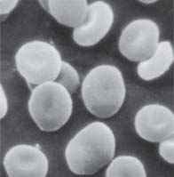
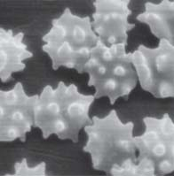
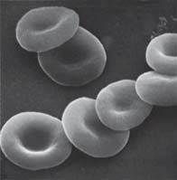
Membranas biológicas 119
conocido como plasmólisis ( FIGURAS 5-14b y 14c ). La plasmólisis se produce en las plantas cuando el suelo o el agua alrededor de ellos contienen altas concentraciones de sales o fertilizantes. También explica por qué la lechuga pierde turgencia en un aderezo de ensalada salada y por qué una fl or que se corta se marchita por falta de agua.
La difusión facilitada se realiza a favor de un gradiente de concentración
En todos los procesos en los que las sustancias se mueven por difusión a través de membranas, la transferencia neta de las moléculas de un lado a otro se produce como resultado de un gradiente de concentración. Se ha visto que moléculas de soluto pequeñas, sin carga (no polares), como el oxígeno y el dióxido de carbono, se mueven directamente a través de la membrana a favor de su gradiente de concentración por simple difusión. En la difusión facilitada , una proteína de transporte específi ca hace que la membrana sea permeable a un soluto en particular, como un ion específi co o una molécula polar. Se puede trasladar un soluto específi co
sistir, sin estallar, un medio externo que es muy diluido, conteniendo únicamente una concentración de solutos muy baja. Debido a las sustancias disueltas en el citoplasma, las células son hipertónicas respecto al medio exterior (a la inversa, el medio exterior es hipotónico al citoplasma). El agua se mueve en las células por ósmosis, llenando sus vacuolas centrales y distendiendo las células. Las células se hinchan, construyendo la presión de turgencia contra las paredes celulares rígidas ( FIGURA 5-14a ). Las paredes celulares se estiran sólo ligeramente, y se alcanza un estado de equilibrio cuando su resistencia al estiramiento impide cualquier aumento adicional en el tamaño celular y con ello se detiene el movimiento neto de las moléculas de agua en las células. (Por supuesto, las moléculas continúan moviéndose adelante y atrás a través de la membrana plasmática). La presión de turgencia en las células es un factor importante en el apoyo del cuerpo de las plantas no leñosas. Si una célula que tiene una pared celular se coloca en un medio hipertónico, la célula pierde agua a sus alrededores. Sus contenidos se reducen, y la membrana plasmática se separa de la pared celular, proceso
Membrana plasmática
Núcleo
Membrana plasmática Citoplasma
Membrana vacuolar (tonoplasto)
Vacuola
Vacuola
En el entorno hipotónico, la vacuola de una célula vegetal se llena con agua, pero las paredes celulares rígidas evitan que la célula se expanda. Las células de esta planta de begonia saludable están turgentes.
Cuando la planta de begonia se expone a una disolución hipertónica, sus células se plasmolizan conforme pierden agua.
La planta se marchita y eventualmente muere.
Cengage
FIGURA 5-14 Animada Presión de turgencia y plasmólisis
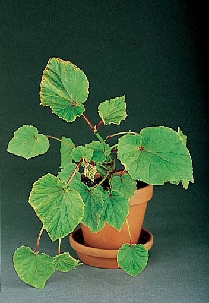
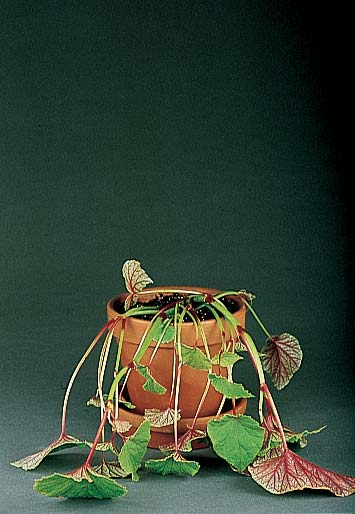
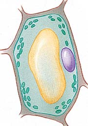
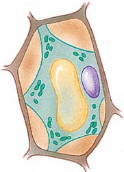
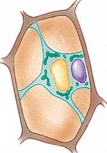
120 Capítulo 5
lizará posteriormente, debido a que los iones son partículas cargadas, se refi eren como gradientes electroquímicos). Estos canales se conocen como canales iónicos bloqueados , que se pueden abrir y cerrar. ¡Hasta 100 millones de iones por segundo pueden pasar a través de un canal iónico abierto! Los canales sólo pueden facilitar el traslado bajo un gradiente de concentración. No pueden transportar activamente los iones de una región de menor concentración a una región de mayor concentración.
Las proteínas transportadoras experimentan un cambio de forma
El traslado de solutos a través de proteínas transportadoras es más lenta que a través de proteínas de canal. La proteína transportadora se une con una o más moléculas de soluto en un lado de la membrana. La proteína entonces experimenta un cambio conformacional (cambio en la forma) que mueve al soluto al otro lado de la membrana. Como un ejemplo de difusión facilitada por una proteína transportadora, se considera el transporte de glucosa. Una proteína transportadora conocida como transportador de glucosa 1 , o GLUT 1 , lleva la glucosa al interior de los eritrocitos ( FIGURA 5-16 ). La concentración de glucosa es mayor en el plasma sanguíneo que en los eritrocitos, por lo que la glucosa se difunde a favor de su gradiente de concentración en estas células sanguíneas. El transportador GLUT 1 facilita la difusión de la glucosa, permitiendo que la glucosa entre en la célula aproximadamente 50,000 veces más rápido que por difusión simple. Los eritrocitos mantienen baja la concentración interna de la glucosa agregando un grupo fosfato a las moléculas de glucosa inmediatamente entran, convirtiéndolas en glucosas fosfato muy cargadas que no pueden pasar de nuevo a través de la membrana. Debido a que la glucosa fosfato es una molécula diferente, no contribuye al gradiente de concentración de la glucosa. Por lo tanto, se mantiene continuamente un gradiente de concentración muy pronunciado para la glucosa, y la
desde el interior de la célula al exterior o desde el exterior al interior, pero el movimiento neto es siempre de una región de mayor concentración de soluto a una región de menor concentración. Las proteínas de canal y las proteínas transportadoras realizan la difusión facilitada por diferentes mecanismos.
Las proteínas de canal forman canales hidrofílicos a través de las membranas
Algunas proteínas de canal son porinas, que forman túneles relativamente grandes a través de las cuales pasan agua y solutos. Sin embargo, la mayoría de ellas forman canales estrechos de modo que transportan iones específi cos a favor de sus gradientes ( FIGURA 5-15 ). (Como se ana-
La difusión facilitada requiere la energía potencial de un gradiente de concentración.
La glucosa se une a GLUT 1.
Fuera de la célula Glucosa
Alta concentración de glucosa
Baja concentración de glucosa
Transportador de glucosa (GLUT 1)
Citosol
GLUT 1 cambia de forma y la glucosa se libera en el interior de la célula.
La GLUT 1 regresa a su forma original.
2 3 1
FIGURA 5-16 Animada Difusión facilitada de moléculas de glucosa
PUNTO CLAVE
K + K +
K +
K +
K + K + K + Fuera de la célula
Citosol K +
FIGURA 5.15 Difusión facilitada de iones potasio En respuesta a un estímulo eléctrico, se abre la puerta del canal iónico de potasio, permitiendo que el potasio se difunda fuera de la célula.
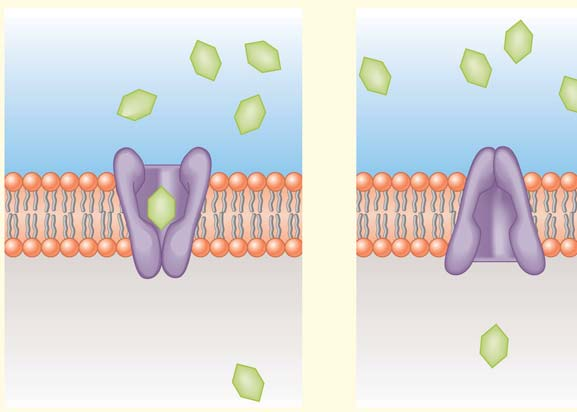
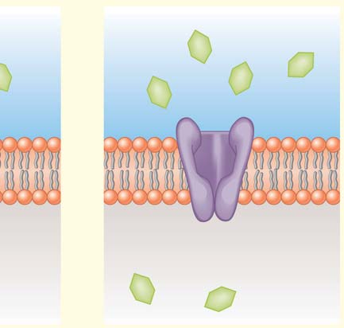
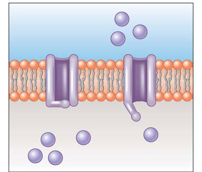
Membranas biológicas 121
Tanto la difusión como el transporte activo requieren energía. La energía para la difusión la proporciona un gradiente de concentración para la sustancia trasladada. El transporte activo requiere que la célula invierta energía metabólica directamente en alimentar el proceso. Un sistema de transporte activo puede bombear materiales de una región de baja concentración a una región de alta concentración. La energía almacenada en el gradiente de concentración además de no estar disponible para el sistema, trabaja contra ella. Por esta razón, la célula necesita alguna otra fuente de energía. En muchos casos, las células utilizan energía del ATP directamente. Sin embargo, el transporte activo puede ser acoplado al ATP indirectamente. En el transporte activo indirecto, un gradiente de concentración proporciona la energía para el cotransporte de alguna otra sustancia, tal como un ion.
El sistema de transporte activo “bombea” sustancias contra sus gradientes de concentración
Uno de los ejemplos más destacado de mecanismo de transporte activo es la bomba de sodio-potasio que se encuentra en todas las células animales ( FIGURA 5-17 ). Esta bomba es un transportador ABC, una proteína de transporte específi co en la membrana plasmática. Utiliza energía del ATP para bombear iones de sodio fuera de la célula y iones de potasio dentro de la célula. El intercambio es desigual: en general sólo dos iones de potasio son importados por cada tres iones de sodio exportados. Ya que estos gradientes de concentración particulares implican iones, un potencial eléctrico (separación de cargas eléctricas) se genera a través de la membrana, es decir, la membrana está polarizada . Tanto los iones de sodio como los de potasio están cargados positivamente, pero debido a que hay menos iones de potasio en el interior con respecto a los iones de sodio de afuera, el interior de la célula está cargada negativamente con respecto al exterior. La distribución desigual de iones establece un gradiente eléctrico que impulsa a los iones a través de la membrana plasmática. Las bombas sodio-potasio ayudan a mantener una separación de cargas a través de la membrana plasmática. Esta separación se llama un potencial de membrana . Ya que hay tanto una diferencia de carga eléctrica como una diferencia de concentración en los dos lados de la membrana, el gradiente se llama un gradiente electroquímico . Estos gradientes almacenan energía que se utiliza para impulsar otros sistemas de transporte. Así que lo importante es el gradiente electroquímico producido por las bombas de algunas células (como las células nerviosas) gastan más del 25% de su energía total disponible sólo para alimentar este sistema de transporte. Las bombas de sodio-potasio (así como todas las otras bombas potenciadas por ATP) son proteínas transmembrana que se distribuyen alrededor de la membrana. Al experimentar una serie de cambios conformacionales, las bombas intercambian el sodio por el potasio a través de la membrana plasmática. A diferencia de lo que ocurre en la difusión facilitada, por lo menos uno de los cambios conformacionales en el ciclo de la bomba requiere energía, que proporciona el ATP. La forma de la proteína bomba de sodio potasio cambia en el ciclo, cuando un grupo fosfato del ATP primero se une a ella y posteriormente es retirado. El uso de potenciales electroquímicos para el almacenamiento de energía no se limita a las membranas plasmáticas de las células animales. Las células de bacterias, hongos y plantas utilizan proteínas transportadoras, conocidas como bombas de protones, para transportar activamente los iones de hidrógeno (que son protones) fuera de la célula. Estas bombas de membrana potenciadoras-ATP transfi eren protones del citosol hacia el exterior ( FIGURA 5-18 ). La eliminación de protones cargados positivamente del citoplasma de estas células da como resultado una gran diferencia en la concentra-
glucosa se difunde con rapidez en la célula, sólo para ser inmediatamente cambiada a la forma fosforilada. La difusión facilitada es impulsada por el gradiente de concentración. Los investigadores han estudiado la difusión facilitada de la glucosa utilizando liposomas , vesículas artifi ciales rodeadas por bicapas de fosfolípidos. La membrana de fosfolípidos de un liposoma no permite el paso de glucosa a menos que un transportador de glucosa esté presente en la membrana del liposoma. Los transportadores de glucosa y las proteínas de transporte similares se unen temporalmente a las moléculas que trasladan. Este mecanismo parece ser similar al modo en que una enzima se une con su sustrato, la molécula sobre la que actúa (que se estudia en el capítulo 7). Además, como en la acción enzimática, la unión al parecer cambia la forma de la proteína transportadora. Este cambio permite que la molécula de glucosa se libere en el interior de la célula. De acuerdo con este modelo, cuando la glucosa se libera en el citoplasma, la proteína transportadora vuelve a su forma original y está disponible para unirse a otra molécula de glucosa en el exterior de la célula. Otra semejanza con la acción enzimática es que las proteínas transportadoras se saturan cuando hay una alta concentración de la molécula que se traslada. Esta saturación puede ocurrir ya que la disponibilidad de las proteínas transportadoras es fi nita y funcionan a una velocidad máxima defi nida. Cuando la concentración de moléculas de soluto para ser trasladadas alcanza cierto nivel, todas las proteínas transportadoras están trabajando a su velocidad máxima. Es un error común pensar que la difusión, ya sea simple o facilitada, es de alguna manera “gratuita” y que sólo los mecanismos de transporte activo requieren energía. Ya que la difusión siempre implica el movimiento neto de una sustancia a favor de su gradiente de concentración, se dice que los gradientes de concentración “impulsan” el proceso. Sin embargo, se necesita energía para hacer el trabajo de establecer y mantener el gradiente. En el ejemplo de difusión facilitada de glucosa, la célula mantiene un gradiente de concentración elevado (alto fuera, bajo dentro) mediante la fosforilación de las moléculas de glucosa una vez que han entrado en la célula. Se gasta una molécula de ATP por cada molécula de glucosa fosforilada, y hay costos adicionales, como la energía necesaria para hacer que las enzimas realicen la reacción.
Repaso
■ ¿Qué pasaría si una célula vegetal se colocara en una disolución isotónica? ¿En un entorno hipertónico? ¿En un ambiente hipotónico? ¿Cómo modifi caría sus predicciones para una célula animal?
■ ¿Cuál es la fuente inmediata de energía para la difusión simple? ¿Para difusión facilitada?
■ ¿En qué dirección se mueven las partículas a lo largo de su gradiente de concentración? ¿Sus respuestas serían diferentes para la difusión facilitada en comparación con la difusión simple?
5.5 TRANSPORTE ACTIVO
OBJETIVO DE APRENDIZAJE
9 Describir el transporte activo, incluido el cotransporte.
Aunque unas pocas sustancias se mueven en cantidades sufi cientes a través de las membranas celulares por difusión, las células deben transportar activamente muchos solutos contra un gradiente de concentración. La razón es que las células requieren muchas sustancias en concentraciones mayores que su concentración fuera de la célula.
La bomba de sodio-potasio es una proteína transportadora que mantiene un gradiente electroquímico a través de la membrana plasmática.
- P
Fuera de la célula
Citosol
Na +
Na + Na +
Menor
Mayor
Gradiente de concentración del sodio
Gradiente de concentración de potasio
Mayor
Menor
Canal de transporte activo
- La bomba de sodio-potasio es una proteína transportadora que requiere energía del ATP. En cada ciclo completo de bombeo, la energía de una molécula de ATP se utiliza para exportar tres iones de sodio (Na + ) e importar dos iones de potasio (K + ).
Na +
Na + Na +
ADP
Na +
Na +
P
P
Tres Na + se unen a la proteína transportadora.
El grupo fosfato se transfiere a partir de ATP a la proteína transportadora.
La fosforilación provoca un cambio de forma de la proteína transportadora, liberando 3 Na + fuera de la célula.
2 K + se unen a la proteína transportadora.
El fosfato se libera. El fosfato liberado permite que la proteína transportadora regrese a su forma original. Dos iones K + se liberan dentro de la célula.
- Siga los pasos que ilustran un modelo de transporte activo mediante la bomba de sodio-potasio.
1
6 5
3 2
4
K +
K +
ATP ADP
ATP
P Na +
Na + Na + Na +
K +
K +
K +
K +
K +
K +
P
FIGURA 5-17 Animada Un modelo para el ciclo de bombeo de la bomba de sodio-potasio
PUNTO CLAVE
Membranas biológicas 123
Se ha visto cómo se puede mover la glucosa dentro de la célula por difusión facilitada. La glucosa también se puede cotransportar en la célula. La concentración de sodio dentro de la célula se mantiene baja por el requerimiento del ATP por las bombas de sodio-potasio que trasladan activamente iones de sodio fuera de la célula. En el cotransporte de la glucosa, una proteína transportadora acarrea tanto sodio como glucosa ( FIGURA 5-19 ). Como el sodio se mueve en la célula a lo largo de su gradiente de concentración, la proteína transportadora captura la energía liberada y la utiliza para acarrear la glucosa en la célula. Así, este sistema de transporte activo indirecto para la glucosa es “impulsado” por el cotransporte de sodio.
Repaso
■ ¿Cuál es la fuente de energía para el transporte activo?
■ ¿Cuál es la fuente de energía para el cotransporte?
5.6 EXOCITOSIS Y ENDOCITOSIS
OBJETIVO DE APRENDIZAJE
10 Comparar los mecanismos de transporte de exocitosis y endocitosis.
Las moléculas individuales y los iones pasan a través de la membrana plasmática por difusión simple y facilitada así como por transporte activo mediado por el transportador. Algunos de los materiales más grandes, como moléculas de gran tamaño, las partículas de alimentos, o incluso células pequeñas, también se mueven dentro o fuera de las células. Son trasladados por exocitosis y endocitosis. Al igual que el transporte activo, estos procesos requieren un gasto de energía directamente de la célula.
En la exocitosis, las vesículas exportan grandes moléculas
En la exocitosis , una célula expulsa productos de desecho, o productos de secreción como las hormonas, mediante la fusión de una vesícula con
ción de protones entre el exterior y el interior de la célula. El exterior de las células está cargado positivamente con respecto a la parte interior de la membrana plasmática. La energía almacenada en estos gradientes electroquímicos se puede utilizar para muchos tipos de trabajo celular. Otras bombas de protones se utilizan en forma “inversa” para sintetizar ATP. Las bacterias, las mitocondrias y los cloroplastos utilizan la energía de los alimentos o la luz del Sol para establecer gradientes de concentración de protones (que se examinan en los capítulos 8 y 9). Cuando los protones se difunden a través de los portadores de protones de una región de alta concentración de protones a una de baja concentración, el ATP es sintetizado. Estos gradientes electroquímicos forman la base para los sistemas de conversión de energía más importantes en prácticamente todas las células. Las bombas de iones tienen otras funciones importantes. Por ejemplo, tienen un papel decisivo en la capacidad de una célula animal para igualar las presiones osmóticas de su citoplasma y su entorno externo. Si una célula animal no controla su presión osmótica interna, su contenido se hace relativamente hipertónico al exterior. El agua entra por ósmosis, causando que la célula se hinche y posiblemente estalle (vea la fi gura 5-13c). Mediante el control de la distribución de iones a través de la membrana, la célula controla indirectamente el movimiento del agua, porque cuando los iones son bombeados fuera de la célula, el agua sale por ósmosis.
Las proteínas transportadoras pueden transportar uno o dos solutos
Puede haber observado que algunas proteínas de transporte, como las bombas de protones, transportan un tipo de sustancia en una sola dirección. Estas proteínas transportadoras se conocen como uniportadores . Otras proteínas transportadoras, las simportadoras , mueven dos tipos de sustancias en una misma dirección. Por ejemplo, una proteína transportadora específi ca lleva sodio y glucosa al interior de la célula. Todavía otras proteínas transportadoras, las antiportadoras , acarrean dos sustancias en direcciones opuestas. Las bombas de sodio-potasio trasladan iones de sodio fuera de la célula y los iones de potasio dentro de la célula. Ambas simportadoras y antiportadoras cotransportan solutos.
Los sistemas de cotransporte proporcionan energía indirectamente para el transporte activo
Un sistema de cotransporte mueve solutos a través de una membrana por transporte activo indirecto . Dos solutos son trasladados al mismo tiempo. El movimiento de un soluto a favor de su gradiente de concentración proporciona energía para el traslado de algunos otros solutos hasta su gradiente de concentración. Sin embargo, se necesita una fuente de energía como el ATP para alimentar la bomba que produce el gradiente de concentración. Las bombas de sodio-potasio (y otras bombas) generan gradientes de concentración electroquímicos. El sodio se bombea fuera de la célula y luego se difunde de nuevo moviéndose hacia abajo de su gradiente de concentración. Este proceso genera sufi ciente energía para el transporte activo de otras sustancias esenciales. En estos sistemas, una proteína transportadora cotransporta un soluto en contra de su gradiente de concentración, mientras que los iones sodio, potasio e hidrógeno se mueven hacia abajo de su gradiente. La energía del ATP produce el gradiente de iones. Entonces la energía de este gradiente impulsa el transporte activo de una sustancia requerida, tal como glucosa, en contra de su gradiente.
ATP
Fuera de la célula
Citosol
– – – – –
H +
H +
H +
H +
H +
H +
ADP
FIGURA 5-18 Modelo de una bomba de protones Las bombas de protones utilizan la energía del ATP para transportar los protones (iones de hidrógeno) a través de las membranas. Se puede utilizar la energía del gradiente electroquímico establecido para otros procesos.
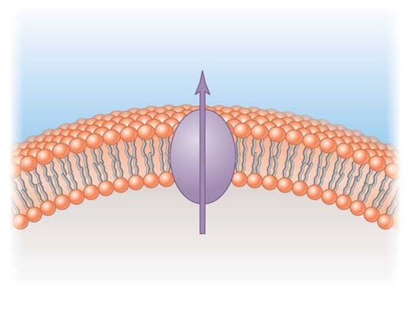
124 Capítulo 5
0.25 μ m
La vesícula se aproxima a la membrana plasmática,
se fusiona con ella, y
libera su contenido fuera de la célula.
1
1
2
2
3
3
Bloom and Fawcett Textbook of Histology
FIGURA 5-20 Exocitosis La MET muestra la exocitosis de los componentes proteínicos de la leche por una célula de la glándula mamaria.
Una proteína transportadora mueve los iones de sodio por su gradiente de concentración y utiliza esa energía para cotransportar moléculas de glucosa en contra de su gradiente de concentración.
– –
– –
– –
– –
Los iones de sodio y glucosa se unen a la proteína transportadora.
Fuera de la célula Na + Glucosa
Proteína transportadora
Citosol
La proteína transportadora cambia de forma y libera iones de sodio y glucosa en el interior de la célula.
Bicapa de lípidos
Gradiente de concentración de glucosa
2 1
FIGURA 5-19 Un modelo para el cotransporte de iones de glucosa y sodio Observe que esta proteína transportadora es una simportadora.
PUNTO CLAVE
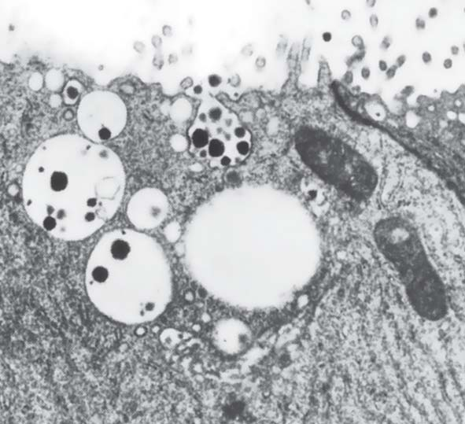
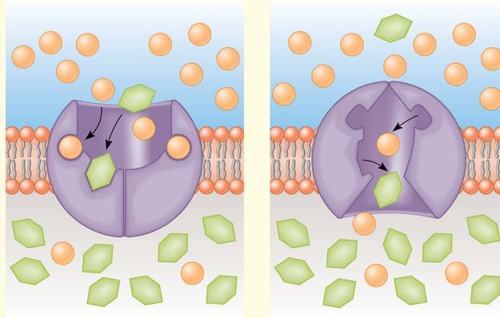
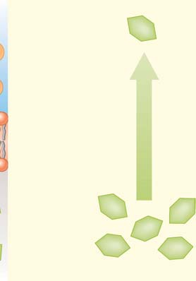
Membranas biológicas 125
el contenido del fl uido de estas vesículas se transfi ere en forma lenta en el citosol, las vesículas se vuelven progresivamente más pequeñas. En un tercer tipo de endocitosis, endocitosis mediada por receptores , moléculas específi cas se combinan con las proteínas del receptor en la membrana plasmática. La endocitosis mediada por receptores es el mecanismo principal por el cual las células eucariotas toman macromoléculas. Como ejemplo, echemos un vistazo a la forma en que las células de mamíferos toman el colesterol de la sangre. Las células utilizan el colesterol como un componente de las membranas celulares y como un precursor de hormonas esteroideas. El colesterol se transporta en la san-
la membrana plasmática ( FIGURA 5-20 ). Conforme el contenido de la vesícula se libera de la célula, la membrana de la vesícula secretora se integra a la membrana plasmática. Éste es el mecanismo principal por el cual la membrana plasmática aumenta de tamaño.
En la endocitosis, la célula importa materiales
En la endocitosis , los materiales son incorporados en la célula. Varios tipos de mecanismos de endocitosis operan en los sistemas biológicos, incluyendo la fagocitosis, pinocitosis y la endocitosis mediada por un receptor. En la fagocitosis (literalmente, “células comiendo”), la célula ingiere partículas grandes de sólidos como alimento o bacterias ( FIGURA 5-21 ). Algunos protistas ingieren alimentos por fagocitosis. Diferentes tipos de células de vertebrados, incluidos ciertos leucocitos, ingieren bacterias y otras partículas por fagocitosis. Durante la ingestión, los pliegues de la membrana plasmática encierran la célula o partícula. Cuando la membrana rodea la partícula, se fusiona en el punto de contacto, formando una vacuola. La vacuola puede entonces fusionarse con los lisosomas, que degradan el material ingerido. En la pinocitosis (“células bebiendo”), la célula toma los materiales disueltos ( FI-
GURA 5-22 ). Pequeñas gotas de fl uido son atrapadas por los pliegues de la membrana plasmática, atrapándolas dentro del citosol en forma de vesículas pequeñas. Conforme
2.5 μ m
Bacteria
Glucógeno (nutrientes almacenados)
Bacterias ingeridas Núcleos
Vacuola grande Lisosomas
Vacuola
Lisosoma Lisosoma
Después la vacuola se desprende dentro de la célula. Los lisosomas se fusionan con la vacuola y vierten potentes enzimas hidrolíticas sobre el material ingerido.
1 2 3 Los pliegues de la membrana plasmática rodean las partículas a ser ingeridas, formando una pequeña vacuola a su alrededor.
Lisosomas
Bloom and Fawcett Textbook of Histology
FIGURA 5-21 Animada Fagocitosis En este tipo de endocitosis, una célula ingiere partículas sólidas relativamente grandes. El leucocito (un neutrófi lo) que se muestra en la MET está fagocitando bacterias. Las vacuolas contienen bacterias que ya han sido ingeridas. Los lisosomas contienen enzimas digestivas que descomponen el material ingerido. Se ven otras bacterias fuera de la célula.
FIGURA 5-22 Pinocitosis, o “células bebiendo”
Pequeñas gotas de fluido son atrapados por los pliegues de la membrana plasmática.
Éstas se desprenden dentro del citosol como pequeñas vesículas llenas de fluido.
El contenido de estas vesículas es entonces transferido lentamente al citosol.
Vesículas pinocitóticas Microvellosidades
Citosol
1 2 3
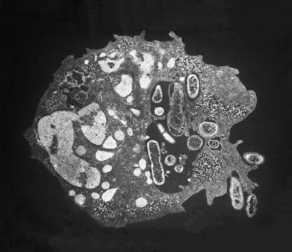
126 Capítulo 5
Cuando se necesita colesterol, la célula utiliza receptores de LDL. Los receptores están concentrados en depresiones o fosas revestidas , regiones deprimidas en la superfi cie citoplásmica de la membrana plasmática. Cada fosa está revestida por una capa de una proteína, llamada clatrina , que se encuentra justo debajo de la membrana plasmática. Una molécula que se une específi camente a un receptor se llama ligando . En este caso, el LDL es el ligando. Después de que el LDL se une con un receptor, la fosa revestida forma una vesícula revestida por endocitosis. La FIGURA 5-23 muestra la captación de una partícula de LDL. Segundos después la vesícula se mueve hacia el citoplasma, se disocia el revestimiento, dejando una vesícula sin revestimiento. Las vesículas se
gre como parte de unas partículas llamadas lipoproteínas de baja densidad ( LDL , conocido popularmente como “colesterol malo”). En estudios realizados por Michael Brown y Joseph Goldstein del Centro de Ciencias de la Salud de la Universidad de Texas se detallaron muchas de las vías de la endocitosis mediada por receptor sobre el receptor de LDL. Estos investigadores fueron galardonados con el Premio Nobel de Fisiología o Medicina en 1985 por su trabajo pionero. Sus descubrimientos tienen importantes implicaciones médicas porque el colesterol que queda en la sangre en lugar de entrar en las células se puede depositar en las paredes arteriales, lo que aumenta el riesgo de enfermedad cardiovascular.
En la endocitosis mediada por receptor, las macromoléculas específi cas se unen a las proteínas receptoras, acumuladas en fosas revestidas, y entran en la célula en vesículas recubiertas de clatrina.
Membrana plasmática
Fosa revestida
Partícula de LDL
Receptor de LDL
Citosol
Vesícula sin revestimiento
Clatrina reciclada
Endosoma
Endosoma
Clatrina
Lisosoma secundario
Colesterol libre
- Captación de partículas de lipoproteínas de baja densidad (LDL), que transportan el colesterol en la sangre.
Lisosoma primario
El LDL se une a receptores específicos en fosas revestidas, que presenta la membrana plasmática.
1
La vesícula que contiene partículas de LDL se fusiona con un lisosoma, formando un lisosoma secundario. Las enzimas hidrolíticas luego digieren el colesterol de las LDL para uso celular.
5
4
5
1
3
2
La endocitosis provoca la formación de una fosa o pozo revestido en el citosol. Segundos más tarde el revestimiento se elimina.
2
La vesícula sin revestimiento se fusiona con el endosoma.
3
Los receptores se regresan a la membrana plasmática y se reciclan.
4
0.25 μ m
- Esta serie de MET muestra la formación de una vesícula revestida a partir de una depresión o fosa revestida.
De M.M. Perry y A.B. Gilbert, Journal of Cell Science 39:257-272,1979. © 1979 The Company of Biologists Ltd.
FIGURA 5-23 Animada Endocitosis mediada por receptor
PUNTO CLAVE
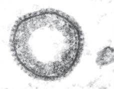
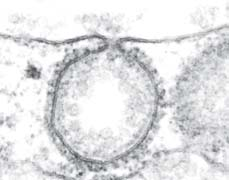
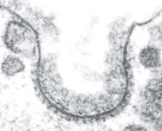
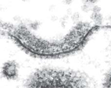
Membranas biológicas 127
muestran en la fotografía de apertura del capítulo, son componentes importantes de las uniones de anclaje. Estas uniones no impiden el paso de materiales entre las células adyacentes. Dos tipos comunes de uniones de anclaje son los desmosomas y las uniones adherentes. Los desmosomas son puntos de unión entre las células ( FIGURA
5-24 ). Mantienen juntas a las células en un momento dado como un remache o un punto de soldadura. Los desmosomas permiten que las células formen láminas fuertes, y que las sustancias continúen pasando libremente a través de los espacios entre las membranas plasmáticas. Cada desmosoma se compone de regiones de material denso asociado con los lados citosólicos de las dos membranas plasmáticas, además de fi lamentos proteínicos que cruzan el estrecho espacio intercelular entre
fusionan con pequeños compartimentos llamados endosomas . El LDL y los receptores de LDL se separan y los receptores son transportados a la membrana plasmática, donde se reciclan. La LDL se transfi ere a un lisosoma, donde se descompone. El colesterol se libera en el citosol para que la célula lo use. A continuación se presenta un resumen simplifi cado de endocitosis mediada por receptor:
las moléculas ligando se unen a los receptores en las fosas o pozos
revestidos de la membrana plasmática ¡ se forman vesículas
revestidas por endocitosis ¡ el revestimiento se desprende de la
vesícula ¡ la vesícula sin revestimiento se fusiona con el endosoma
¡ los ligandos se separan de los receptores separados que son
reciclados; los endosomas se fusionan con lisosomas primarios,
formando lisosomas secundarios ¡ el contenido del lisosoma
secundario se digiere y se libera en el citosol.
El reciclaje de los receptores de LDL a la membrana plasmática a través de las vesículas provoca un problema común a todas las células que utilizan mecanismos de endocitosis y exocitosis: la membrana plasmática cambia de tamaño conforme las vesículas brotan o se fusionan con ésta. Un tipo de células fagocíticas conocidas como un macrófago , por ejemplo, ingiere el equivalente a su membrana plasmática completa en aproximadamente 30 minutos, lo que requiere una cantidad equivalente de reciclaje o síntesis de una nueva membrana para que la célula mantenga su área superfi cial. Por otro lado, las células que están constantemente implicadas en la secreción deben devolver una cantidad equivalente de la membrana al interior de la celda por cada vesícula que se fusiona con la membrana plasmática, si no, la superfi cie de la célula continuaría expandiéndose aun cuando el crecimiento de la misma célula puede estar detenido.
Repaso
■ ¿En qué son similares la exocitosis y la endocitosis?
■ ¿En qué se diferencian los procesos de fagocitosis y pinocitosis?
■ ¿Cuál es la secuencia de eventos de la endocitosis mediada por receptores?
5.7 UNIONES CELULARES
OBJETIVO DE APRENDIZAJE
11 Comparar las estructuras y funciones de las uniones de anclaje, uniones estrechas, uniones en hendidura y los plasmodesmos.
Las células en estrecho contacto entre sí desarrollan típicamente uniones intercelulares especializadas. Estas estructuras pueden permitir que las células vecinas formen conexiones fuertes entre sí, impedir el paso de materiales, o establecer una comunicación rápida entre las células adyacentes. Existen varios tipos de uniones que conectan las células animales, como las uniones de anclaje, uniones estrechas y uniones en hendidura. Las células vegetales están conectadas por los plasmodesmos.
Las uniones de anclaje conectan las células de una lámina epitelial
Las células epiteliales adyacentes, como las que se encuentran en la capa externa de la piel de los mamíferos, están tan estrechamente unidas entre sí por uniones de anclaje que se necesitarían intensas fuerzas mecánicas para separarlas. Las cadherinas, las proteínas transmembrana que se
Membrana plasmática
Espacio intercelular
Filamentos intermedios
Filamentos de proteína
Disco de material proteico denso
Desmosoma
0.25 μ m
Célula 1 Célula 2
Bloom and Fawcett Textbook of Histology
FIGURA 5-24 Desmosomas La densa estructura en la MET es un desmosoma. Cada desmosoma consiste en un par de discos semejantes a botones que asocian las membranas plasmáticas de células adyacentes, además de fi lamentos de proteína intercelular que conecta los discos entre sí. Los fi lamentos intermedios de las células adyacentes se unen a los discos y de esta manera se conectan a los otros desmosomas.
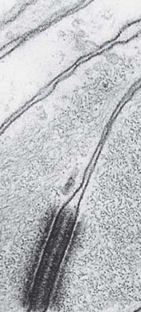
128 Capítulo 5
nexiones están tan apretadas que no queda espacio entre las células y las sustancias no pueden fi ltrarse entre ellas. Las MET de uniones estrechas muestran la región de unión de las membranas plasmáticas de las dos células presentan uniones estrechas por proteínas en contacto real entre sí. Sin embargo, como se muestra en la FIGURA 5-25 , las uniones estrechas están situadas de forma intermitente. Las membranas plasmáticas de las dos células no se fusionan en toda su superfi cie. Las células conectadas por uniones estrechas sellan las cavidades del cuerpo. Por ejemplo, las uniones estrechas entre las células que recubren el intestino impiden que las sustancias en el intestino pasen entre las células y entren directamente en la sangre. La capa de células entonces actúa como una barrera selectiva. Las sustancias alimenticias se deben transportar a través de las membranas plasmáticas y a través de las células intestinales antes de entrar en la sangre. Esta conformación ayuda a evitar que las toxinas y otros materiales no deseados entren en la sangre y también impide que los nutrientes se escapen del intestino. Las uniones
ellas. Los desmosomas están anclados a los sistemas de fi lamentos intermedios dentro de la célula. Así, se conectan las redes de fi lamentos intermedios de las células adyacentes. Como resultado, las tensiones mecánicas se distribuyen por todo el tejido. Las uniones adherentes son como pegamentos que mantienen a las células juntas. Las cadherinas forman una banda continua de adherencia alrededor de cada célula, uniendo a la célula con las células vecinas. Estas uniones conectan a los microfi lamentos del citoesqueleto. Las cadherinas de uniones adherentes son un camino potencial para que las señales procedentes del ambiente exterior se transmitan al citoplasma.
Las uniones estrechas sellan los espacios intercelulares entre algunas células animales
Las uniones estrechas u ocluyentes literalmente son áreas entre las membranas de células adyacentes conectadas estrechamente. Estas co-
Las uniones estrechas impiden el paso de materiales a través de los espacios entre las células.
- Una unión estrecha está formada por la conexión entre las cadenas de proteínas de las células adyacentes. Estas proteínas sellan el espacio intercelular, impidiendo el paso de materiales a través de los espacios entre las células.
Membranas plasmáticas Filas o cadenas de las proteínas de unión estrecha
Espacio intercelular
- Esta MET muestra puntos de fusión entre las membranas plasmáticas de células adyacentes que recubren el intestino. La unión estrecha se destaca en el recuadro.
Célula 2 Célula 1
Microvellosidades
Luz o lumen del intestino
Unión estrecha
Espacio intercelular
0.1 μ m
G. E. Palade
FIGURA 5-25 Animada Uniones estrechas
PUNTO CLAVE
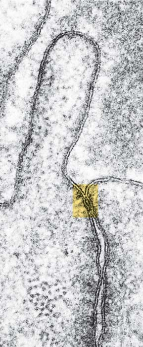
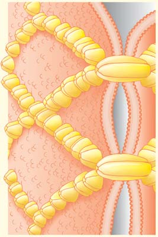
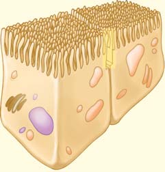
Membranas biológicas 129
nes en hendidura, el marcador pasa rápidamente a las células adyacentes pero no entra en el espacio entre las células. Las uniones en hendidura proporcionan una comunicación química y eléctrica rápida entre las células. Las células controlan el paso de materiales a través de las uniones en hendidura, abriendo y cerrando los canales (vea la fi gura 5-26d). Las células en el páncreas, por ejemplo, están unidas por uniones en hendidura de tal manera que si uno de un grupo de células es estimulado para secretar insulina, la señal se pasa a través de las uniones de las otras células en el grupo. Este mecanismo garantiza una respuesta coordinada a la señal inicial. Las uniones en hendidura le permiten a algunas células nerviosas acoplarse eléctricamente. Las células del músculo cardiaco están unidas por uniones en hendidura que permiten el fl ujo de iones necesarios para sincronizar las contracciones del corazón.
Los plasmodesmos le permiten a ciertas moléculas y iones moverse entre las células vegetales
Debido a que las células vegetales tienen paredes, no necesitan la fuerza de los desmosomas. Las células vegetales tienen conexiones que son funcionalmente equivalentes a las uniones en hendidura de algunas células animales. Los plasmodesmos son canales de 20 a 40 nm de ancho que
estrechas también están presentes en las células de los delgados capilares del cerebro. Forman la barrera hematoencefálica que impide que muchas sustancias de la sangre pasen al cerebro.
Las uniones en hendidura permiten la transferencia de pequeñas moléculas y iones
Una unión en hendidura o gap une estrechamente los espacios que hay entre las células con desmosomas como si fueran un puente ( FIGURA
5-26 ). Las uniones en hendidura también se diferencian en que son uniones comunicantes. Además de conectar las membranas plasmáticas también tienen canales que conectan el citoplasma de células adyacentes. Las uniones en hendidura se componen de conexina , una proteína integral de la membrana. Grupos de seis moléculas de conexina se agrupan para formar un cilindro que se extiende alrededor de la membrana plasmática. Los cilindros de conexina sobre las células adyacentes quedan fi rmemente unidos. Los dos cilindros forman un canal, aproximadamente de 1.5 nm de diámetro. Pequeñas moléculas inorgánicas (como los iones) y algunas moléculas reguladoras (como el AMP cíclico, que se ilustra en la fi gura 3-25) pasan a través de los canales, pero se excluyen las moléculas más grandes. Cuando se inyecta alguna sustancia marcadora en una de las células de un grupo de células conectadas mediante unio-
Las uniones en hendidura permiten la transferencia de moléculas pequeñas y iones entre las células adyacentes .
0.1 μ m
0.25 μ m
Cerrado Abierto
Una MET de una unión de hendidura.
Las dos membranas plasmáticas contienen cilindros compuestos de seis moléculas de conexinas. Dos cilindros opuestos de las membranas se unen para formar un canal que conecta los compartimentos citoplasmáticos de las dos células.
Una réplica de criofractura de la cara-P de una unión en hendidura entre dos células de ovario de un ratón. Cada partícula corresponde a un cilindro de conexina.
Este modelo muestra cómo el poro de la unión en hendidura puede abrirse y cerrarse.
Bloom and Fawcett Textbook of Histology
E. Anderson et al. Journal of Morphology 156: 339–366, 1978. Reprinted with permission of Wiley–Liss, Inc., a subsidiary of John Wiley & Sons, Inc.
FIGURA 5-26 Animada Uniones en hendidura El modelo de una unión en hendidura que se muestra en ( b ) se basa en el microscopio electrónico y datos de rayos X de difracción.
PUNTO CLAVE
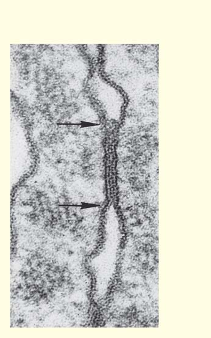
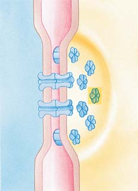
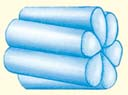
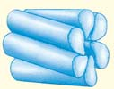
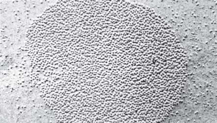
130 Capítulo 5
pasan a través de las células vegetales, conectando el citoplasma de células vecinas ( FIGURA 5-27 ) . Las membranas plasmáticas de las células adyacentes son continuas entre sí a través de los plasmodesmos. La mayoría de los plasmodesmos contienen una estructura estrecha cilíndrica, llamado desmotúbulo , que recorre el canal y se conecta al RE liso de las dos células adyacentes. Los plasmodesmos generalmente permiten que pasen las moléculas y los iones, pero no los orgánulos, a través de las aberturas de célula a célula. El movimiento de los iones a través de los plasmodesmos permite un tipo muy lento de señalización eléctrica en las plantas. Considerando que los canales de uniones tienen un diámetro fi jo, las células de las plantas pueden dilatar los canales de plasmodesmos. Ciertas proteínas y el ARN pueden pasar a través de los plasmodesmos. Algunos virus de las plantas propagan infecciones porque pasan a través de estas uniones.
Repaso
■ ¿En qué son funcionalmente semejantes los desmosomas y las uniones estrechas? ¿En qué se diferencian?
■ ¿Cuál es la justificación para considerar que las uniones en hendidura y los plasmodesmos sean funcionalmente semejantes? ¿Cómo se diferencian desde el punto de vista estructural?
La mayoría de las células vegetales tienen plasmodesmos que las conectan con el citoplasma de las células adyacentes.
Plasmodesmos Desmotúbulos
Paredes celulares
Membrana plasmática
Célula 1
Célula 2
RE liso
FIGURA 5-27 Plasmodesmos Los canales citoplasmáticos a través de las paredes celulares de las células vegetales adyacentes permiten el paso de agua, iones y moléculas pequeñas. Los canales están alineados con las membranas plasmáticas fusionadas de las dos células adyacentes.
PUNTO CLAVE
5.1 ( página 107 )
1 Evaluar la importancia de las membranas para la homeostasis de la célula, enfatizando sus diversas funciones.
■ La membrana plasmática físicamente separa el interior de la célula del medio extracelular, recibe información acerca de los cambios en el medio ambiente, regula el paso de materiales dentro y fuera de la célula, y se comunica con otras células.
■ Las membranas biológicas forman compartimentos dentro de las células eucariotas que permiten una variedad de funciones separadas. Las membranas participan en y sirven como superfi cies para las reacciones bioquímicas. 2 Describir el modelo de mosaico fl uido de la estructura de la membrana celular.
■ De acuerdo con el modelo de mosaico fl uido , las membranas consisten en una bicapa fl uida de fosfolípidos en la que se incrustan una variedad de proteínas. Las moléculas de fosfolípidos son anfi páticas : tienen regiones hidrófobas e hidrófilas. Las cabezas hidrófilas de los fosfolípidos están en las dos superfi cies de la bicapa, y sus cadenas hidrófobas de ácidos grasos se encuentran en el interior. 3 Relacionar las propiedades de la bicapa de lípidos con las propiedades y funciones de la membrana celular.
■ En casi todas las membranas biológicas, los lípidos de la bicapa están en un estado fl uido o líquido-cristalino, que le permiten a las moléculas de lípidos moverse rápidamente en el plano de la membrana. Las proteínas también se mueven dentro de la membrana.
■ Las bicapas de lípidos son fl exibles y autosellantes y pueden fusionarse con otras membranas. Estas propiedades le permiten a la célula trans-
portar materiales de una región de la célula a otra; los materiales son trasladados en vesículas que brotan de una membrana celular y después se fusionan con alguna otra membrana. 4 Describir las formas en que las proteínas de membrana se asocian con la bicapa de lípidos.
■ Las proteínas integrales de la membrana están incrustadas en la bicapa con sus superfi cies hidrófilas expuestas al entorno acuoso y sus superfi cies hidrófobas en contacto con el interior hidrófobo de la bicapa. Las proteínas transmembrana son proteínas integrales que atraviesan completamente el espesor de la membrana.
■ Las proteínas periféricas de la membrana se asocian con la superfi cie de la bicapa, normalmente se unen a las regiones expuestas de proteínas integrales, y se separan con facilidad sin perturbar la estructura de membrana.
5.2 ( página 114 )
5 Resumir las funciones de las proteínas de membrana.
■ Las proteínas de membrana anclan las células, transportan materiales, actúan como enzimas o receptores, reconocen a otras células y se comunican con ellas, y unen estructuralmente a las células.
5.3 ( página 115 )
6 Describir la importancia de las membranas con permeabilidad selectiva o semipermeables y comparar las funciones de las proteínas transportadoras y las proteínas de canal.
■ Las membranas biológicas son membranas semipermeables : permiten el paso de algunas sustancias, pero no de otras. Regulando el paso de
■ ■ RESUMEN: ENFOQUE EN LOS OBJETIVOS DE APRENDIZAJE
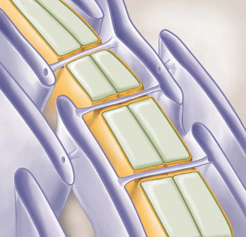
Membranas biológicas 131
■ Las células vegetales soportan la alta presión hidrostática interna debido a que sus paredes celulares les impide la expansión y explosión. El agua se mueve en las células vegetales por ósmosis y llena las vacuolas centrales. Las células se hinchan, formando la presión de turgencia contra las paredes celulares de soporte.
Membrana plasmática
Citoplasma
Membrana vacuolar (tonoplasto)
Vacuola
5.5 ( página 121 )
9 Describir el transporte activo, incluido el cotransporte.
■ En el transporte activo , la célula gasta energía metabólica para mover los iones o moléculas a través de una membrana, contra un gradiente de concentración. Por ejemplo, la bomba de sodio-potasio utiliza ATP para bombear iones de sodio fuera de la célula y iones de potasio dentro de la célula.
- P
Fuera de la célula
Citosol
Na +
Na + Na +
Menor
Mayor
Gradiente de concentración del sodio
Gradiente de concentración de potasio
Mayor
Menor
Canal de transporte activo
K +
K +
ATP ADP
■ En el cotransporte , también llamado transporte activo indirecto , dos solutos son trasladados al mismo tiempo. Una bomba de ATP accionada mantiene un gradiente de concentración. Entonces una proteína transportadora cotransporta dos solutos. Se traslada un soluto bajo su gradiente de concentración y utiliza la energía liberada para mover otro soluto en contra de su gradiente de concentración.
5.6 ( página 123 )
10 Comparar los mecanismos de transporte de exocitosis y endocitosis.
■ La célula gasta energía metabólica para realizar la exocitosis y la endocitosis. En la exocitosis , la célula expulsa productos de desecho o secreta sustancias como moco por fusión de vesículas con la membrana plasmática. Este proceso aumenta la superfi cie de la membrana plasmática.
moléculas que entran y salen de la célula y sus compartimentos, la célula controla su volumen y la composición interna de iones y moléculas.
■ Las proteínas de transporte de la membrana facilitan el paso de ciertos iones y moléculas través de las membranas biológicas. Las proteínas transportadoras son un tipo de proteínas de transporte que soportan una serie de cambios conformacionales puesto que se unen y transportan un soluto específi co. Los transportadores ABC son las proteínas transportadoras que utilizan la energía del ATP para llevar solutos.
■ Las proteínas de canal son proteínas de transporte que forman conductos por medio de los cuales el agua y ciertos iones viajan a través de la membrana. Las porinas son proteínas de canal que forman poros relativamente grandes a través de la membrana para permitir el paso de agua y solutos determinados.
Aprenda más acerca de la membrana plasmática y proteínas de membrana haciendo clic sobre las fi guras en CengageNOW.
5.4 (página 116)
7 Comparar la difusión simple con la difusión facilitada.
■ La difusión es el movimiento neto de una sustancia a favor de su gradiente de concentración desde una región de mayor concentración a una de menor concentración. La difusión y la ósmosis son procesos físicos que no necesitan consumir energía metabólica directamente de la célula.
■ En la difusión simple a través de una membrana biológica, las moléculas del soluto o iones se mueven directamente a través de la membrana a favor de su gradiente de concentración. La difusión facilitada utiliza proteínas específi cas de transporte para mover solutos a través de una membrana. Como en la difusión simple, el movimiento neto es siempre de una región de mayor a una región de menor concentración de soluto. La difusión facilitada no puede trabajar en contra de un gradiente de concentración.
K + K +
K +
K +
K + K + K + Fuera de la célula
Citosol K +
8 Defi nir ósmosis y resolver problemas sencillos relacionados con la ósmosis, por ejemplo, predecir si las células se hinchan o se encogen bajo distintas condiciones osmóticas .
■ La ósmosis es un tipo de difusión en la cual las moléculas de agua pasan a través de una membrana semipermeable de una región con una concentración efectiva de agua mayor a una región donde su concentración efectiva es menor.
■ La concentración de sustancias disueltas (solutos) en una disolución determina su presión osmótica . Las células regulan sus presiones osmóticas internas para evitar encogimiento o estallido.
■ Una disolución isotónica tiene una concentración igual de solutos en comparación a la de otro líquido, por ejemplo, el fl uido dentro de la célula.
■ Cuando una célula se coloca en una disolución hipertónica , o aquella que tiene un soluto con mayor concentración que la de la célula, ésta pierde agua en su entorno; las células vegetales sufren plasmólisis , un proceso en el que la membrana plasmática se separa de la pared celular.
■ Cuando las células se colocan en una disolución hipotónica , esto es la que tiene una menor concentración de soluto que la concentración de soluto de la célula, el agua entra en las células y hace que se hinche.
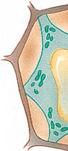
132 Capítulo 5
5.7 ( página 127 )
11 Comparar las estructuras y funciones de las uniones de anclaje, uniones estrechas, uniones en hendidura y los plasmodesmos.
■ Las células en estrecho contacto entre sí pueden formar uniones intercelulares. Las uniones de anclaje incluyen desmosomas y uniones adherentes; se encuentran entre las células que forman una lámina de tejido. Los desmosomas son como puntos de soldadura de las células adyacentes animales. Las uniones adherentes están formadas por cadherinas , proteínas transmembrana que mantienen pegadas a las células.
■ Las uniones estrechas sellan las membranas de las células animales adyacentes, evitando que las sustancias se muevan a través de los espacios entre las células.
■ Las uniones en hendidura están compuestas de la proteína conexina, forman canales que permiten la comunicación entre el citoplasma de las células animales adyacentes.
■ Los plasmodesmos son canales que conectan las células vegetales adyacentes. Las aberturas en las paredes celulares le permiten a las membranas plasmáticas y al citosol ser continuos; ciertas moléculas y iones pueden pasar de una celda a otra.
■ En la endocitosis , materiales como partículas de alimentos se mueven en la célula. Una parte de la membrana plasmática envuelve el material, introduciéndolo en una vesícula o vacuola que se libera dentro de la célula. Este proceso disminuye el área superfi cial de la membrana plasmática.
■ Tres tipos de endocitosis son fagocitosis, pinocitosis, y la endocitosis mediada por receptores.
■ En la fagocitosis , la membrana plasmática encierra una partícula grande como una bacteria, forma una vacuola alrededor de ella, y luego se mueve alrededor de la célula. En la pinocitosis , la célula toma los materiales disueltos para formar vesículas pequeñas alrededor de las gotitas de líquido atrapadas por pliegues de la membrana plasmática.
■ En la endocitosis mediada por receptores , los receptores específi cos que se encuentran en depresiones o fosas revestidas a lo largo de la membrana plasmática se unen a moléculas ligando . Estas fosas, revestidas por la proteína clatrina, forma vesículas revestidas, por endocitosis. Las vesículas se fusionan con los lisosomas, y sus contenidos se digieren y se liberan en el citosol.
Aprenda más acerca del transporte de membrana haciendo clic sobre las fi guras en CengageNOW.
De acuerdo con el modelo de mosaico fl uido, las membranas consisten en (a) un sándwich lípido-proteína (b) principalmente fosfolípidos con ácidos nucleicos dispersos (c) una bicapa de fosfolípidos fl uida en la que están incrustadas las proteínas(d) una bicapa de fosfolípidos fl uida en la que están incrustados los carbohidratos (e) una bicapa de proteínas que se comporta como un cristal líquido
Las proteínas transmembrana (a) son proteínas periféricas (b) son proteínas receptoras (c) se extienden completamente a través de la membrana (d) se extienden a lo largo de la superfi cie de la membrana (e) se secretan desde la célula
¿Cuál de los siguientes no es una función de la membrana plasmática? (a) transporta materiales (b) ayuda estructuralmente en el enlace de las células (c) tiene receptores que transmiten señales d) ancla la célula a la matriz extracelular (e) fabrica proteínas
Los transportadores ABC (a) utilizan la energía de hidrólisis de ATP para el traslado de ciertos iones y azúcares (b) son importantes en la difusión facilitada de ciertos iones (c) son un pequeño grupo de proteínas de canal (d) se encuentran principalmente en las membranas celulares de la planta (e) permiten la difusión pasiva a través de sus canales
Cuando las células vegetales están en un medio hipotónico (a) experimentan plasmólisis (b) aumentan su presión de turgencia (c) se marchitan (d) disminuyen la pinocitosis (e) ceden agua al ambiente.
Un técnico de laboratorio por accidente pone eritrocitos en una disolución hipertónica. ¿Qué sucede? (a) experimentan plasmólisis (b) aumentan su presión de turgencia (c) se hinchan (d) bombean solutos hacia fuera (e) se deshidratan y se encogen
¿Cuál de los siguientes procesos requiere que la célula consuma energía metabólica directamente (por ejemplo, del ATP)? (a) ósmosis (b) difusión facilitada (c) todas las formas de transporte mediadas por un transportador d) transporte activo (e) la difusión simple.
Los gradientes electroquímicos (a) accionan la difusión simple (b) se estabilizan con pinocitosis (c) son necesarios para el transporte por acuaporinas (d) son estabilizados con gradientes de concentración (e) son resultado tanto de una diferencia de carga eléctrica como de la concentración de un diferencia entre los dos lados de la membrana
En cotransporte (transporte activo indirecto) (a) un uniportador mueve un soluto a través de una membrana en contra de su gradiente de concentración (b) el movimiento de un soluto a favor de su gradiente de concentración proporciona la energía para el traslado de algunos otros solutos hasta que logre su gradiente de concentración (c) una proteína del canal de iones se mueve por difusión facilitada (d) la ósmosis impulsa el movimiento de iones en contra de su gradiente de concentración (e) el sodio se traslada directamente en una dirección, y el potasio es indirectamente transportado en la misma dirección.
Una célula toma materiales disueltos formando vesículas pequeñas alrededor de las gotitas de fl uido atrapadas por pliegues de la membrana plasmática. Este proceso es (a) un transporte activo indirecto (b) pinocitosis (c) endocitosis mediada por receptor (d) exocitosis (e) difusión facilitada.
Las uniones de anclaje que mantienen a las células juntas en un punto como un punto de soldadura no son (a) uniones estrechas (b) uniones de adherencia (c) desmosomas (d) uniones en hendidura (e) plasmodesmos
EVALÚE SU COMPRENSIÓN
Membranas biológicas 133
Las uniones que permiten la transferencia de agua, iones y moléculas entre las células vegetales adyacentes son (a) uniones estrechas (b) uniones de adherencia (c) desmosomas (d) uniones en hendidura (e) plasmodesmos
Marque la membrana celular. Consulte la fi gura 5-6 para comprobar sus respuestas
¿Por qué no pueden los iones y moléculas polares grandes difundirse a través de la membrana plasmática? ¿Sería ventajoso para la célula si se pudiera? Explique.
Describa una manera en que un gradiente iónico se puede establecer y mantener.
La mayoría de las células vegetales adyacentes están conectadas por plasmodesmos, mientras que sólo ciertas células animales adyacentes se asocian a través de uniones en hendidura. ¿Qué podría explicar de esta diferencia?
VÍNCULO CON LA EVOLUCIÓN. Hipótesis: la evolución de las membranas biológicas fue un paso esencial en el origen de la vida. Dé argumentos que apoyen (o cambien) esta hipótesis.
VÍNCULO CON LA EVOLUCIÓN. Se han encontrado proteínas de transporte en todas las membranas biológicas. ¿Qué hipótesis se podría plantear con respecto a si estas moléculas se desarrollaron
antes o después en la historia de las células? Argumente en favor de su hipótesis.
- CIENCIA, TECNOLOGÍA Y SOCIEDAD. Los biólogos saben bastante acerca de los componentes que forman las paredes celulares de las plantas, pero no tienen datos sufi cientes para modelar los componentes de la pared celular como un sistema. ¿Estaría usted a favor de invertir los fondos del gobierno en la investigación y la tecnología que permitiría a los investigadores poder modelar la pared celular? ¿Por qué sí o por qué no? ¿Sería diferente su respuesta si considera que una mejor comprensión de la pared celular podría permitir a los biólogos manipular el crecimiento de las plantas, la maduración de la fruta y la textura de ciertos alimentos?
Preguntas adicionales están disponibles en CengageNOW en www.cengage.com/ login.
PENSAMIENTO CRÍTICO